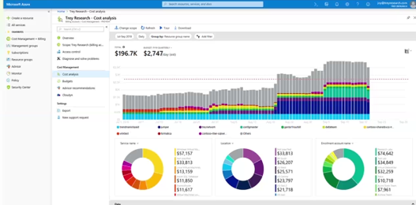
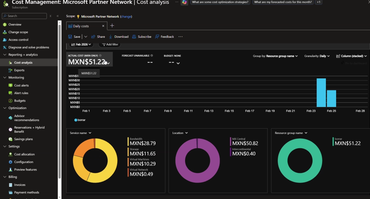

Actualmente existen múltiples proveedores de computación en la
nube como Amazon Web Services (AWS), Google Cloud Platform,
Oracle Cloud Infrastructure e IBM Cloud, cada uno con
fortalezas específicas. Sin embargo, Microsoft Azure se
distingue por una combinación particular de integración
empresarial, enfoque híbrido y ecosistema Microsoft.
Introducción a la Computación en la Nube de Azure
Índice
¿Qué es la nube?
La nube es el servicio de contratación de recursos
tecnológicos, donde un servidor se encuentra físicamente en un
centro de datos en alguna parte del mundo. De manera
coloquial, la nube es el centro de datos que ofrece servicios
de cómputo, almacenamiento y redes a través de internet.
Estos servicios se adquieren contactando a una empresa
proveedora de nube de Azure.
EXPLORAR DATA CENTER INTERACTIVO
.
Tipos de nube
Pública
Es como rentar un departamento. Usas un espacio que pertenece
a una empresa grande (como Microsoft o Google), lo compartes
con otros usuarios y solo pagas por lo que usas.
Privada
Es como tener tu propia casa. Todo el espacio es solo para ti
o tu empresa. Ofrece mayor control y privacidad, pero también
mayor responsabilidad y costo.
Híbrida
Es como tener casa propia y también rentar. Parte de la
información se mantiene en infraestructura privada y otra
parte se maneja en la nube pública según convenga.
On premise: todos los recursos tecnológicos
están dentro de la empresa.
Escalabilidad
La escalabilidad es la capacidad de un sistema para crecer o
reducir recursos según la cantidad de peticiones o
transacciones. Si se ocupan más recursos, el sistema los toma;
si no, reduce el consumo.
Existen dos tipos principales de escalabilidad:
Escalabilidad vertical (Scale Up):
Consiste en aumentar la capacidad de un solo servidor, por
ejemplo, agregando más memoria RAM, mayor capacidad de
procesamiento (CPU) o almacenamiento. Es una solución
sencilla, pero tiene límites físicos y suele implicar tiempos
de mantenimiento.
Escalabilidad horizontal (Scale Out):
Consiste en agregar más servidores al sistema para distribuir
la carga de trabajo. Este enfoque permite mayor tolerancia a
fallos, mejor rendimiento y es el más utilizado en entornos de
computación en la nube como Azure.
Modelos de servicio en la nube
IaaS – Infraestructura como Servicio
Ofrece mucho control, pero implica más trabajo administrativo.
Ejemplo: máquinas virtuales.
PaaS – Plataforma como Servicio
Permite subir tu aplicación y ejecutarla sin preocuparte por
la infraestructura. El proveedor entrega un entorno Windows o
Linux listo para ejecutar.
Analogía: la casa que rentas ya tiene cocina, servicios y
espacio listo.
SaaS – Software como Servicio
Es como un hotel. Solo usas el servicio tal como se ofrece.
Solicitas y consumes lo disponible, respetando las reglas del
proveedor.
Latencia, replicación y disponibilidad
Latencia: es la distancia entre el usuario y
la región o servidor.
Replicación: consiste en copiar información
entre servidores para reducir latencia y evitar fallas.
Disponibilidad: indica qué tanto tiempo un
sistema está funcionando y accesible. Un sistema con alta
disponibilidad casi nunca se cae.
Todo junto en una idea:
- Latencia: qué tan rápido responde
- Replicación: copias para evitar fallas
- Disponibilidad: que siempre esté activo
Regiones y centros de datos
Una región está formada por uno o varios centros de datos.
Ejemplo: tener dos módems. Si uno falla, el otro mantiene el
servicio activo.
¿Por qué China es diferente?
En China, los servicios de Azure no son operados directamente
por Microsoft. Debido a regulaciones gubernamentales estrictas
sobre datos y telecomunicaciones.
Esto significa que las regiones de Azure en China están
aisladas del resto del Azure global, tienen portales,
facturación y reglas distintas, y los datos no salen del país.
Servidores y centros de datos
Un servidor es una unidad física computacional.
Un centro de datos es un área completa llena de servidores
físicos con grandes recursos.
Los centros de datos ofrecen servicios de cómputo en la nube.
Organización de categorías en Azure
Azure organiza sus servicios en:
- Cómputo
- Almacenamiento
- Redes
- Bases de datos
- Seguridad
- Identidad
- Analítica e IA
- Administración y monitoreo
Cómputo en Azure
El cómputo representa la computadora que trabaja para el
usuario en Azure.
Máquina virtual: computadora prestada que
vive en internet, con CPU, memoria RAM, disco duro, sistema
operativo y conexión a red.
Sistemas operativos Windows en Azure
Azure utiliza principalmente Windows Server en sus máquinas
virtuales. La versión depende de los requerimientos del
sistema.
Versiones comunes:
- Windows Server 2012 / 2016 / 2019 / 2022
- Ediciones Datacenter y Standard
- Windows 10 / 11 Pro
- Windows Home
- Windows Single Language
Arquitectura 32 bits vs 64 bits
Analogía: 32 bits es una autopista de un carril, 64 bits es
una autopista de dos carriles.
El límite de 32 bits es 4 GB de RAM.
Azure Blob Storage
Azure Blob Storage es un servicio de almacenamiento seguro en
internet.
Sirve para archivos, objetos y respaldos, con pago por uso y
acceso desde cualquier lugar.
Blob significa Binary Large Object.
Funciona de manera similar a OneDrive, especialmente para
objetos pesados.
Windows Server en Azure: uso y licenciamiento
Microsoft utiliza principalmente Windows Server en sus
máquinas virtuales dentro de:La versión y edición se
seleccionan según los requerimientos del sistema, la carga de
trabajo y el nivel de virtualización.
| Versión / Edición |
¿Para qué sirve? |
Licenciamiento |
| Windows Server 2012 / 2016 / 2019 / 2022 |
Hospedar aplicaciones empresariales, servicios web,
APIs, bases de datos, Active Directory, DNS y DHCP.
|
Incluido en el costo de la máquina virtual o
reutilizable mediante Azure Hybrid Benefit.
|
| Windows Server Datacenter |
Diseñado para entornos altamente virtualizados con uso
intensivo de máquinas virtuales y servicios en la nube.
|
Licencia más costosa, orientada a grandes cargas de
trabajo.
|
| Windows Server Standard |
Para cargas de trabajo medianas con menor cantidad de
máquinas virtuales.
|
Menor costo que Datacenter. |
| Windows 10 / 11 Pro |
Uso como escritorio virtual, pruebas de aplicaciones y
entornos de desarrollo.
|
Licenciamiento por usuario o dispositivo. |
| Windows Home |
Uso personal o doméstico. No recomendado para entornos
empresariales en Azure.
|
Licencia individual, no orientada a servidores. |
| Windows Single Language |
Uso básico o educativo con un solo idioma. |
Licencia económica con funcionalidad limitada. |
Servicios de almacenamiento en Azure
| Servicio |
¿Para qué sirve? |
Casos de uso comunes |
| Azure Blob Storage |
Almacenamiento de archivos grandes (Binary Large
Object).
|
Imágenes, videos, documentos, respaldos y objetos
pesados.
|
| Azure File Storage |
Servidor de archivos en la nube sin comprar hardware.
|
Carpetas compartidas, migrar file servers, aplicaciones
que usan rutas de red, respaldos simples.
|
| Azure Disk Storage |
Discos duros virtuales para máquinas virtuales. |
Sistema operativo, programas y datos de servidores
virtuales.
|
| Azure Queue Storage |
Almacenamiento de mensajes pequeños en filas. |
Procesamiento en segundo plano, teorías de colas, evitar
sobrecargas (filas de banco o conciertos).
|
| Azure Table Storage |
Almacenamiento de datos estructurados simples en forma
de tablas.
|
Datos tipo Excel, claves Partition Key y Row Key,
información rápida sin base de datos relacional.
|
| Azure Data Lake Storage |
Almacenamiento de grandes volúmenes de datos sin
estructurar.
|
Big Data, analítica avanzada, ciencia de datos, datos
masivos para análisis posterior.
|
La selección del tipo de almacenamiento depende de la
información de la empresa, los aplicativos y los datos que se
desean manejar, considerando rendimiento, costo y
escalabilidad.
Redes en Azure
Las redes en azure
permiten crear entornos privados de comunicación entre
recursos, similares a tener tu propio WiFi, pero en la nube.
Se configuran distintos servicios para controlar quién se
conecta, cómo se conecta y qué puede consumir.
Virtual Network (VNet)
Una Virtual Network (VNet) es tu red privada dentro de Azure.
Los recursos que están dentro de la misma VNet se comunican de
forma interna.
No es una red pública. Funciona como cuando ocultas tu red
WiFi local: nadie la ve desde fuera y es más privada.
Subnet (Subred)
Una subnet es una división dentro de una red grande. Sirve
para segmentar recursos y organizar mejor la infraestructura.
Analogía de edificio: un edificio es la VNet y cada piso es
una subnet.
Analogía de terreno: un terreno grande se divide en áreas
(estacionamiento, área de juegos, jardín). Cada área es una
subnet.
La subnet es privada porque vive dentro de una red privada,
aunque los recursos dentro de ella pueden exponerse de forma
pública.
Direcciones IP
Una IP es un identificador único para identificar
dispositivos, recursos de red y máquinas virtuales.
Funciona como un gafete o una dirección: te subes a un taxi y
le das una dirección específica.
Ejemplo de IP: 192.168.0.1
Analogía:
- 192 → alcaldía
- 168 → colonia
- 0 → calle
- 1 → casa
El rango 192.168.0.0 – 192.168.255.255 está
reservado para redes privadas y no es enrutable en el internet
global.
Tipos de IP
Dinámica: cambia cada vez que un dispositivo
se conecta.
Estática: la red recuerda la dirección y
asigna siempre la misma.
Ámbito
IP privada:Se utiliza para la comunicación
interna dentro de Azure, entre recursos como máquinas
virtuales, bases de datos y servicios empresariales. No es
visible en internet. Ejemplo: una base de datos o un servidor
interno solo se comunica mediante una IP privada, permitiendo
que las aplicaciones accedan a la información sin exponerla al
exterior.
IP pública: Es visible fuera del portal de
Azure y permite que usuarios externos accedan a los servicios.
Ejemplo: cuando un usuario accede a una plataforma como
Netflix, el servicio utiliza una IP pública para identificar
la conexión y entregar el contenido al usuario.
Segmentación y prefijos
La segmentación se basa en bits y prefijos como /8, /16 o /24.
Entre más pequeño el prefijo, mayor cantidad de direcciones,
más caminos, más hilos y más recursos disponibles.
Esto define cuántas subredes se crean y cómo se dividen.
VPN en Azure
Una VPN es un túnel seguro que conecta redes u oficinas a
través de internet. La información viaja cifrada y se descifra
al llegar al destino.
Tipos de VPN
Sitio a sitio: conecta oficina con oficina
(por ejemplo, Estados Unidos ↔ México).
Punto a sitio: un usuario se conecta a un
recurso, como cuando consumes Netflix.
La VPN no es privada en transporte, ya que viaja por internet,
pero sí es segura gracias al cifrado.
ExpressRoute
ExpressRoute es una conexión privada y directa entre una
oficina o red física y Azure.
No pasa por internet.
Analogía:
- VPN → viajar por carretera pública con túnel cifrado
-
ExpressRoute → autopista privada sin tráfico ni internet
Es más estable, más rápida y más privada que una VPN.
Azure Firewall
Azure Firewall bloquea puertos maliciosos y tráfico no
autorizado.
Es como el guardia principal que protege las aplicaciones.
Analogía: si alguien intentara entrar al sistema de alerta
sísmica para generar una falsa alerta, el firewall evitaría el
caos.
Network Security Group (NSG)
Un Network Security Group es un mecanismo de filtrado de
tráfico que se aplica a subredes o interfaces de red.
Funciona como una lista de acceso: define qué máquinas
virtuales pueden comunicarse entre sí y cuáles no.
Permite reglas de entrada y salida basadas en: puertos,
protocolos y direcciones IP.
Balanceador de carga (Azure Load Balancer)
Azure Load Balancer distribuye el tráfico entre varios
recursos para evitar sobrecargas y garantizar alta
disponibilidad.
Permite que múltiples máquinas virtuales atiendan peticiones
de forma equilibrada.
Administración y monitoreo de Azure
La administración y el monitoreo de Azure consisten en
organizar, controlar y supervisar los recursos que existen
dentro de la plataforma para asegurar su correcto
funcionamiento, seguridad y disponibilidad.
Herramientas principales de administración
-
Azure CLI: Es la interfaz de línea de
comandos (Command Line Interface) que permite administrar
recursos de Azure mediante comandos. Funciona de forma
similar a trabajar en un entorno local como CMD o la
terminal, pero aplicada a recursos en la nube.
Tiene un alcance global, ya que permite visualizar y
administrar todos los recursos de Azure, como si fueran
carpetas dentro de un sistema centralizado.
-
Azure PowerShell: Está orientado
principalmente a entornos Windows y es ampliamente utilizado
por administradores de sistemas y desarrolladores. Permite
la automatización de tareas como la creación de usuarios,
gestión de recursos y configuración avanzada mediante
scripts.
-
Microsoft Entra ID (antes Azure Active
Directory): Permite gestionar identidades y accesos dentro
de una organización. Se utiliza para controlar quién puede
acceder a los recursos de Azure y qué permisos tiene cada
usuario o grupo.
Azure Resource Manager (ARM)
¿Qué es?
Azure Resource Manager es una herramienta que permite
crear, organizar y administrar todos los recursos que usas en Azure
desde un solo lugar.
En lugar de manejar cada recurso por separado, ARM te permite
verlos y controlarlos como un conjunto, facilitando la administración,
el orden y el control de costos.
¿Qué permite hacer Azure Resource Manager?
- Crear servidores virtuales.
- Crear bases de datos.
- Crear redes y servicios.
- Agrupar todos los recursos relacionados en un mismo grupo.
- Administrar permisos y accesos.
Ejemplo práctico en Azure
Supongamos que una empresa necesita un sistema para una aplicación.
Con Azure Resource Manager se puede:
- Crear un servidor virtual para ejecutar la aplicación.
- Crear una base de datos para guardar la información.
- Agrupar ambos recursos en un mismo Grupo de Recursos.
De esta forma, todo lo relacionado con la aplicación queda
ordenado y fácil de administrar.
Ejemplo sencillo (no técnico)
Imagina una ciudad y su ayuntamiento:
- El ayuntamiento administra escuelas, hospitales y parques.
- Cada colonia tiene sus propios servicios agrupados.
- Si se quiere cerrar o remodelar una colonia, se gestionan todos sus
servicios juntos.
Azure Resource Manager funciona igual:
agrupa y administra recursos relacionados en un mismo lugar,
facilitando el control y la organización.
Azure Resource Manager permite mantener los recursos organizados,
controlados y fáciles de administrar, evitando desorden y problemas
de gestión.
Azure Policy
¿Qué es?
Azure Policy es una herramienta de gobernanza que sirve para
definir reglas sobre lo que se puede y no se puede hacer dentro de
:contentReference[oaicite:0]{index=0}.
Su objetivo principal es mantener el entorno
ordenado, seguro y bajo control, asegurando que todos los recursos
cumplan con las reglas definidas por la empresa.
¿Para qué sirve Azure Policy?
- Controlar qué configuraciones están permitidas en la nube.
- Estandarizar cómo se crean los recursos.
- Evitar errores humanos.
- Reducir costos aplicando reglas automáticas.
- Administrar Azure bajo tus propios criterios.
Ejemplos de reglas (políticas)
- Si una máquina virtual no tiene tags, se elimina automáticamente.
- Solo se permiten ciertos tipos de direcciones IP.
- No se pueden crear recursos fuera de una región autorizada.
- Se bloquea la creación de recursos costosos sin autorización.
Estas reglas se aplican de forma automática, sin necesidad de revisar
recurso por recurso.
Ejemplo práctico (tu mundo)
Supongamos que quieres mantener orden y control de costos:
- Todas las máquinas virtuales deben tener tags como:
Proyecto, Área y Responsable.
- Si alguien crea una máquina virtual sin tags, Azure Policy la elimina.
Así evitas máquinas olvidadas, desorden y gastos innecesarios.
Ejemplo sencillo (no técnico)
Imagina un fraccionamiento privado:
- Hay reglas: no casas de más de cierto tamaño.
- No se permiten construcciones sin permiso.
- Todos deben seguir las mismas normas.
Azure Policy funciona igual:
establece reglas claras y se asegura de que todos las cumplan.
Azure Cost Management
¿Qué es?
Azure Cost Management es una herramienta de
monitoreo
que nos permite ver, analizar y controlar cuánto dinero estamos gastando
en la nube.
Azure Cost Management ayuda a controlar el gasto en la nube,
evitando recursos olvidados y manteniendo el presupuesto bajo control.
Su función principal es ayudarnos a entender en qué se va el dinero y
evitar gastos innecesarios.
¿Para qué sirve Azure Cost Management?
- Ver el gasto total de la nube en tiempo real.
- Identificar qué recursos generan más costo.
- Crear presupuestos mensuales.
- Recibir alertas cuando el gasto es alto.
- Evitar sorpresas en la factura.
Ejemplo práctico
Supongamos que tienes una máquina virtual para pruebas:
- La usas solo unas horas al día.
- Pero alguien la deja encendida todo el mes.
- El costo empieza a subir sin que nadie lo note.
Con Azure Cost Management puedes:
- Ver que esa máquina está generando gasto constante.
- Recibir una alerta de costo alto.
- Decidir apagarla, reducir su tamaño o eliminarla.
Presupuestos y alertas
Azure Cost Management permite definir un presupuesto, por ejemplo:
- Presupuesto mensual: $5,000.
- Alerta al llegar al 80% del gasto.
- Alerta crítica al llegar al 100%.
Así puedes actuar antes de que el gasto se salga de control.


Monitoreo en Azure
Monitorear es vigilar constantemente que todos los recursos
funcionen correctamente dentro de la nube.
¿Para qué sirve el monitoreo?
- Supervisar el estado de servidores, aplicaciones y servicios
- Investigar incidentes y fallas
- Analizar telemetrías (CPU, memoria, red, etc.)
- Detectar picos anormales en horarios donde normalmente el consumo es bajo
¿Qué pasa después de monitorear?
Una vez que sabemos qué está ocurriendo, se pueden aplicar reglas, alertas
o políticas para que un comportamiento ocurra o deje de ocurrir.
Analogía
El monitoreo funciona como un KPI que mide la salud y el
ciclo de vida de un servidor.
- CPU: ritmo de trabajo del servidor
- Memoria: capacidad de respuesta
- Disponibilidad: si el servidor está activo o caído
Precios en Azure
utiliza un esquema de pago por uso, lo que significa que solo
se cobra por los recursos que realmente consumes durante un periodo de tiempo.
Modelo de pago por uso
- Se factura por segundos, minutos u horas, según el servicio
- No requiere pagos iniciales obligatorios
- Permite escalar recursos hacia arriba o hacia abajo según la demanda
- Ideal para entornos variables, pruebas y proyectos en crecimiento
Factores que afectan el precio
- Tipo de recurso: máquinas virtuales, bases de datos, almacenamiento, redes
- Región: el costo varía según el centro de datos (país o zona)
- Capacidad: CPU, memoria RAM, espacio en disco
- Tiempo de uso: horas activas del recurso
- Tráfico de red: especialmente el tráfico de salida
Formas de ahorro en Azure
- Apagar recursos cuando no se utilizan (VMs, entornos de prueba)
- Usar Azure Reserved Instances para cargas estables
- Aplicar autoescalado para evitar sobreaprovisionamiento
- Monitorear consumo y establecer presupuestos con alertas
- Elegir el tamaño correcto del recurso según la carga real
Conclusión
Azure ofrece flexibilidad financiera, pero requiere monitoreo y control
constante para evitar costos innecesarios y aprovechar al máximo el modelo de
pago por uso.
SLA y Ciclo de Vida en Azure
¿Qué es SLA en Azure?
SLA (Service Level Agreement) es el nivel de servicio de la nube que garantiza disponibilidad y confiabilidad.
Gracias al SLA, es muy poco probable que un servicio se caiga.
Ciclo de vida de un servicio en Azure
Todo servicio de Azure pasa por distintas etapas:
- Preview (vista previa): fase inicial donde el servicio está disponible para pruebas y feedback.
- GA (General Availability): disponibilidad general, el servicio está listo para producción y soporte completo.
- Retire (Retirement): fin de ciclo de vida. El servicio deja de recibir soporte y actualizaciones.
Ejemplo práctico
Durante su ciclo de vida, se aplican parches y actualizaciones para corregir errores y mejorar el servicio.
En la fase de Preview se pueden realizar pruebas piloto para detectar problemas antes de su disponibilidad general.
Disponibilidad general
Cuando un servicio alcanza GA, es muy poco probable que tenga problemas. Esto significa que el SLA garantiza alta confiabilidad.
Fin de ciclo de vida del producto
Cuando un servicio se jubila:
- Deja de recibir soporte y actualizaciones.
- Azure proporciona opciones para migrar a servicios nuevos.
- La migración asegura continuidad del negocio y evita interrupciones.
Calculadora de Precios en Azure
La Calculadora de Azure sirve para estimar aproximadamente cuánto costará usar diferentes recursos en la nube.
Cost Management te muestra el costo real de lo que ya consumiste, que puede variar según uso real.
Ejemplo de tablas de máquinas virtuales
En Azure, existen diferentes series de máquinas virtuales según su propósito y rendimiento.
Cada serie tiene un objetivo específico como producción, soporte, pruebas, etc.
| Serie |
Objetivo / Uso |
Número de VMs sugeridas |
Ejemplo práctico |
| A-series |
Desarrollo y pruebas |
10 – 50 |
Probar nuevas aplicaciones antes de producción |
| B-series |
Uso intermitente / soporte |
5 – 20 |
Servidores de soporte o apps con picos de carga |
| D-series |
Producción / cargas generales |
20 – 100 |
Aplicaciones de negocio críticas |
| F-series |
Procesamiento intensivo de CPU |
10 – 50 |
Simulaciones, cálculos o procesamiento de datos |
| G-series |
Bases de datos grandes / memoria alta |
5 – 20 |
Bases SQL con alto consumo de memoria |
Nota: La calculadora permite estimar costos según la cantidad de máquinas virtuales y sus series.
Se pueden ajustar los números de VMs según el uso real y los objetivos del negocio.
Microsoft Azure AI Fundamentals (AI‑900) certification
IA generativa y agentes
La IA generativa permite a los sistemas crear contenido nuevo como texto,
imágenes, código o audio. Funciona mediante modelos de lenguaje entrenados
con grandes cantidades de datos.
Los usuarios interactúan con estos modelos usando prompts, que son
instrucciones o preguntas en lenguaje natural para generar una respuesta.
LLM vs SLM
- LLM: modelos grandes con muchos datos y parámetros. Son más potentes pero más costosos.
- SLM: modelos más pequeños y eficientes. Se usan en tareas específicas o dispositivos locales.
Agentes de IA
Un agente de IA utiliza modelos de lenguaje para ayudar a los usuarios
o automatizar tareas dentro de una aplicación.
Ejemplos
- Ejemplo 1: Un chatbot que responde preguntas de clientes.
- Ejemplo 2: Un sistema que resume documentos automáticamente.
Texto y lenguaje natural
El Procesamiento del Lenguaje Natural (PLN) es una rama de la IA que
permite a las computadoras entender, analizar y trabajar con texto humano.
Es la base de muchos modelos de lenguaje usados en IA.
Análisis de texto
- Clasificación de texto: asigna un texto a una categoría (ejemplo: análisis de sentimiento).
- Extracción de términos clave: identifica palabras importantes en un documento.
- Detección de entidades: reconoce nombres de personas, lugares u organizaciones.
- Resumen: reduce el texto manteniendo las ideas principales.
Ejemplos
- Analizar reseñas o redes sociales para detectar opiniones positivas o negativas.
- Chatbots que responden preguntas frecuentes automáticamente.
Capacidades de voz en IA
Las tecnologías de voz en IA permiten a los usuarios interactuar con
aplicaciones mediante lenguaje hablado.
Reconocimiento de voz
Convierte el audio en texto. La IA escucha el habla y la transcribe
automáticamente.
Síntesis de voz
Convierte el texto en voz. La IA genera audio hablado a partir
de información escrita.
Ejemplos
- Transcripción automática de llamadas o reuniones.
- Asistentes o agentes de IA que responden con voz.
- Traducción automática de voz entre idiomas.
Visión por computador
La visión por computador es una rama de la IA que permite a los sistemas
analizar imágenes o video para entender su contenido.
Los modelos se entrenan con grandes conjuntos de imágenes.
Tipos de modelos
- Clasificación de imágenes: identifica qué objeto aparece en una imagen.
- Detección de objetos: localiza objetos específicos dentro de una imagen.
- Segmentación semántica: identifica los píxeles que pertenecen a cada objeto.
- Modelos multimodales: combinan imágenes y texto para generar descripciones.
Ejemplos
- Reconocimiento facial.
- Monitoreo de seguridad con cámaras.
- Búsqueda visual de productos.
- Vehículos autónomos y robótica.
Extracción de información
La extracción de información usa IA para obtener datos importantes
desde fuentes no estructuradas como documentos, formularios, imágenes o audio.
Una tecnología clave es el OCR (reconocimiento óptico de caracteres),
que permite detectar y convertir texto dentro de imágenes o documentos escaneados.
Usos comunes
- Procesar formularios o facturas automáticamente.
- Digitalizar documentos en papel.
- Extraer información clave de recibos o contratos.
- Analizar transcripciones de reuniones para detectar puntos importantes.
IA responsable
La IA responsable busca que los sistemas de inteligencia artificial
se desarrollen y utilicen de forma ética, segura y justa.
Principios de IA responsable
| Principio |
Descripción |
| Justicia |
Los modelos deben evitar sesgos y tratar a todas las personas de forma equitativa.
|
| Fiabilidad y seguridad |
Los sistemas de IA deben funcionar correctamente y minimizar riesgos.
|
| Privacidad y seguridad |
Los datos personales deben protegerse y manejarse de forma segura.
|
| Inclusión |
Las soluciones de IA deben ser accesibles para todos los usuarios.
|
| Transparencia |
Los usuarios deben entender cómo funciona el sistema de IA y sus limitaciones.
|
| Responsabilidad |
Las organizaciones que desarrollan IA son responsables de su uso y resultados.
|
Ejemplos
- Un sistema de admisión universitaria debe evaluar solicitudes sin discriminación.
- Un sistema de reconocimiento facial debe proteger las imágenes personales.
- Un agente de voz debe incluir subtítulos para personas con discapacidad auditiva.
- Un banco que usa IA para aprobar préstamos debe informar que usa IA.
¿Qué es una aplicación de IA?
Una aplicación de IA es un software que usa inteligencia artificial
para realizar tareas que normalmente requieren inteligencia humana,
como comprender lenguaje, analizar imágenes o tomar decisiones.
Cargas de trabajo de IA
- IA generativa
- Agentes y automatización
- Voz (speech)
- Análisis de texto
- Visión por computador
- Extracción de información
Todas estas capacidades se basan en el aprendizaje automático (Machine Learning),
que permite a los sistemas aprender patrones a partir de datos.
Tipos de aprendizaje automático
- Aprendizaje supervisado: usa datos etiquetados (ej. clasificación o regresión).
- Aprendizaje no supervisado: descubre patrones sin etiquetas (ej. clustering).
- Aprendizaje profundo: usa redes neuronales para tareas complejas como visión o voz.
- IA generativa: crea contenido nuevo como texto, imágenes o código.
Características de las aplicaciones de IA
- Basadas en modelos: utilizan modelos entrenados para generar resultados.
- Dinámicas: pueden mejorar con nuevos datos.
Ejemplos por industria
| Industria |
Aplicación de IA |
| Salud |
Análisis de imágenes médicas para detectar enfermedades. |
| Finanzas |
Detección de fraude en transacciones. |
| Retail |
Recomendación personalizada de productos. |
| Manufactura |
Mantenimiento predictivo de máquinas. |
| Educación |
Sistemas de aprendizaje personalizados. |
Componentes de una aplicación de IA
Una aplicación de IA se compone de varias capas que trabajan juntas
para almacenar datos, entrenar modelos y ejecutar aplicaciones.
Microsoft Azure proporciona servicios para cada capa.
Capas de una aplicación de IA
| Capa |
Función |
Ejemplos en Azure |
| Datos |
Almacena y gestiona los datos usados para entrenar y usar modelos.
|
Azure SQL, Cosmos DB, Azure Data Lake
|
| Modelo |
Selección, entrenamiento y despliegue de modelos de IA.
|
Azure Machine Learning, Azure OpenAI
|
| Cómputo |
Proporciona recursos para ejecutar aplicaciones y modelos.
|
Azure App Service, Azure Functions, AKS, Container Instances
|
| Integración y orquestación |
Conecta datos, modelos y aplicaciones mediante APIs y herramientas.
|
SDKs, APIs y herramientas de desarrollo en Azure
|
Conceptos clave
- PaaS: servicios administrados para desarrollar aplicaciones sin gestionar infraestructura.
- APIs: permiten que diferentes componentes del software se comuniquen entre sí.
Microsoft Foundry para IA
Microsoft Foundry es una plataforma empresarial de Azure para
construir, desplegar y gestionar aplicaciones y agentes de IA en un solo lugar.
Permite trabajar con modelos, herramientas de IA y servicios de gobernanza
sin preocuparse por la infraestructura.
Básicamente sirve para desarrollar soluciones de inteligencia artificial
utilizando modelos, herramientas de IA y servicios de gobernanza sin tener que
gestionar directamente la infraestructura.
Componentes principales
| Componente |
Función |
| Modelos Foundry |
Acceso a modelos de IA como GPT, modelos multimodales y modelos open source.
|
| Servicio de agentes |
Permite crear agentes de IA que automatizan tareas y flujos de trabajo.
|
| Herramientas de IA |
Servicios como visión, voz, lenguaje y análisis de documentos.
|
| Gobernanza y observabilidad |
Monitorización, seguridad y control del ciclo de vida de los modelos.
|
Ventajas
- Acceso a múltiples modelos de IA desde un solo portal.
- Creación de agentes inteligentes.
- Integración con servicios de Azure.
- Control de seguridad y monitorización de modelos.
Empieza con Foundry
Para comenzar a trabajar con Microsoft Foundry en Azure primero debes
crear un proyecto. Un proyecto es el espacio de trabajo donde se
desarrollan aplicaciones y agentes de IA.
Cuando creas un proyecto, Azure genera un grupo de recursos y despliega
el servicio Foundry en una región específica.
Qué puedes hacer dentro de un proyecto
- Acceder al catálogo de modelos de IA.
- Probar modelos en playgrounds.
- Desplegar modelos y crear agentes.
- Gestionar usuarios, roles y recursos.
Características de Foundry
- Modelos preentrenados: listos para usar o personalizar.
- Acceso mediante APIs: integración sencilla con aplicaciones.
- Disponible en Azure: usa infraestructura de alto rendimiento.
Conceptos importantes
- API: permite que aplicaciones se comuniquen con los servicios de IA.
- Endpoint: dirección del servicio en Azure.
- API Key: clave secreta usada para autenticar solicitudes al servicio.
Entiende Azure
Microsoft Azure es una plataforma de computación en la nube que permite
crear, desplegar y gestionar aplicaciones usando centros de datos de Microsoft.
Ofrece escalabilidad, seguridad y acceso global para desarrollar soluciones
tecnológicas sin necesidad de infraestructura física.
Capacidades en la nube
- Computación: ejecución de aplicaciones mediante máquinas virtuales, contenedores o funciones.
- Almacenamiento: servicios para guardar datos como Blob Storage o Azure Files.
- Redes: conexión segura entre recursos mediante Virtual Network o Load Balancer.
- Servicios de aplicaciones: herramientas para crear y alojar aplicaciones web y APIs.
Cómo Azure organiza los recursos
- Tenant: instancia que gestiona identidades y accesos.
- Suscripción: define el acceso a servicios y la facturación.
- Grupo de recursos: contenedor donde se organizan recursos relacionados.
- Recurso: servicio individual como máquinas virtuales, bases de datos o almacenamiento.
Foundry dentro de Azure
Microsoft Foundry funciona dentro de Azure y utiliza sus recursos para
desarrollar aplicaciones de inteligencia artificial. Los proyectos y hubs de
Foundry se integran con servicios de red, almacenamiento y seguridad de Azure,
permitiendo construir aplicaciones de IA generativa de forma escalable.
Preguntas clave
| Pregunta |
Respuesta correcta |
|
Relación entre IA y ML
|
La IA busca crear sistemas con inteligencia similar a la humana, mientras que el aprendizaje automático (ML) es un método basado en datos que permite a los sistemas aprender patrones para lograr IA.
|
|
Capa de Integración y Orquestación
|
Conecta los modelos de IA y los datos con la lógica de negocio y las interfaces de usuario dentro de una aplicación de IA.
|
|
Organización de recursos en Azure
|
Azure usa tenant para identidad, suscripciones para acceso y facturación, grupos de recursos para organizar servicios y recursos como componentes individuales (VM, bases de datos, almacenamiento, etc.).
|
Introducción al Machine Learning
El machine learning es la combinación de dos disciplinas:
la ciencia de datos y la ingeniería de software.
Su objetivo es utilizar datos para crear modelos predictivos
que puedan integrarse en aplicaciones o servicios.
Los científicos de datos preparan y analizan los datos para entrenar
modelos, mientras que los desarrolladores integran esos modelos en
aplicaciones que generan predicciones sobre nuevos datos
(proceso llamado inferencia).
Idea principal
El aprendizaje automático utiliza datos históricos para
predecir resultados futuros.
Ejemplos de uso
- Predecir ventas de helados usando historial de ventas y clima.
- Predecir riesgo de diabetes usando datos clínicos de pacientes.
- Identificar especies de pingüinos mediante medidas físicas.
Modelos de Machine Learning
Un modelo de machine learning es un programa que utiliza datos para
aprender una relación entre variables y realizar predicciones.
El modelo se entrena con datos históricos y después se usa para
predecir nuevos valores.
Conceptos clave
| Concepto |
Descripción |
| Entrenamiento (Training) |
Proceso donde el modelo aprende patrones a partir de datos históricos
(conocido como training set o train data).
|
| Inferencia (Inferencing) |
Uso del modelo entrenado para predecir nuevos resultados
(conocido como test data o datos de prueba cuando se evalúa el modelo).
|
| Features (x) |
Variables de entrada usadas para hacer una predicción
(ej. temperatura, peso, glucosa) y que se dividen en
training set, validation set y test set.
|
| Label (y) |
Valor que el modelo intenta predecir.
|
| Algoritmo |
Método matemático que encuentra la relación entre las variables.
|
Relación matemática
Un modelo aprende una función que relaciona las variables de entrada
con el resultado:
y = f(x)
Cuando el modelo hace una predicción, el resultado se representa como
ŷ (y-hat), que significa un valor estimado.
Tipos de modelos de Machine Learning
Existen diferentes tipos de modelos de machine learning.
El tipo que se utiliza depende del problema que se desea resolver
o del tipo de predicción que se quiere realizar.
Tipos principales
| Tipo |
Descripción |
| Aprendizaje supervisado |
El modelo se entrena con datos que incluyen features (x) y
labels (y). Aprende la relación entre ambos para hacer predicciones.
|
| Regresión |
Tipo de aprendizaje supervisado donde el modelo predice
valores numéricos.
Ejemplo: precio de una casa o número de ventas.
|
| Clasificación |
Tipo de aprendizaje supervisado donde el modelo predice
categorías o clases.
|
| Clasificación binaria |
Predice una de dos posibles clases.
Ejemplo: fraude / no fraude, enfermedad / no enfermedad.
|
| Clasificación multiclase |
Predice una de varias clases posibles.
Ejemplo: especie de pingüino o género de una película.
|
| Aprendizaje no supervisado |
El modelo se entrena solo con features, sin etiquetas conocidas,
para encontrar patrones en los datos.
|
| Agrupamiento (Clustering) |
Técnica que agrupa datos similares en clusters o grupos.
Ejemplo: segmentación de clientes.
|
Regresión
La regresión es un tipo de modelo de machine learning supervisado cuyo objetivo es
predecir valores numéricos a partir de datos históricos que incluyen
features (x) y labels (y).
Durante el entrenamiento del modelo se realizan varias iteraciones donde se entrena,
se valida y se evalúa el modelo hasta lograr un nivel aceptable de precisión.
Proceso de entrenamiento de un modelo de regresión
| Etapa |
Descripción |
| División de datos |
Los datos se dividen en train (entrenamiento) y
validation/test para evaluar el modelo.
|
| Entrenamiento |
Se aplica un algoritmo de regresión (por ejemplo, regresión lineal)
para encontrar la relación entre x y y.
|
| Predicción |
El modelo entrenado predice valores para los datos de validación.
|
| Evaluación |
Se comparan los valores predichos con los valores reales para medir
la precisión del modelo.
|
Evaluación de un modelo de regresión
| Métrica |
Fórmula |
Ejemplo |
Resultado |
MAE
(Error absoluto medio) |
MAE = promedio(|y − ŷ|) |
Errores absolutos:
2, 3, 3, 1, 2, 3
|
MAE = 2.33
|
MSE
(Error cuadrático medio) |
MSE = promedio((y − ŷ)²) |
Errores cuadrados:
4, 9, 9, 1, 4, 9
|
MSE = 6
|
RMSE
(Raíz del error cuadrático medio) |
RMSE = √MSE |
√6
|
RMSE ≈ 2.45
|
R²
(Coeficiente de determinación) |
R² = 1 − Σ(y − ŷ)² / Σ(y − ȳ)²
|
Compara variación real vs predicción del modelo
|
R² ≈ 0.95
|
Clasificación binaria
La clasificación binaria es un tipo de aprendizaje supervisado donde el modelo
predice una de dos posibles clases se le conoce como regresion logistica.
Generalmente las etiquetas se representan como 0 o 1.
A diferencia de la regresión, donde se predicen valores numéricos, los modelos de
clasificación calculan probabilidades de pertenencia a una clase .
| Real / Predicción |
0 |
1 |
| 0 |
TN = 2 |
FP = 0 |
| 1 |
FN = 1 |
TP = 3 |
| Métrica |
Fórmula |
Resultado |
| Accuracy (Precisión global) |
(TP + TN) / (TP + TN + FP + FN) |
(3 + 2) / 6 = 0.83 |
| Recall |
TP / (TP + FN) |
3 / (3 + 1) = 0.75 |
| Precision |
TP / (TP + FP) |
3 / (3 + 0) = 1.0 |
| F1 Score |
(2 × Precision × Recall) / (Precision + Recall) |
0.86 |
| Métrica / Concepto |
Fórmula |
Ejemplo |
Resultado |
|
Clasificación multiclase
|
Modelo que predice una clase entre varias posibles
|
Especies de pingüinos:
0 = Adelie
1 = Gentoo
2 = Chinstrap
|
El modelo predice la clase más probable
|
|
Datos de entrenamiento
|
x = feature
y = clase
|
Flipper length (x) → especie (y)
167 → 0
172 → 0
225 → 2
197 → 1
189 → 1
232 → 2
158 → 0
|
El modelo aprende relación
entre x e y
|
|
One vs Rest (OvR)
|
f₀(x)=P(y=0|x)
f₁(x)=P(y=1|x)
f₂(x)=P(y=2|x)
|
Cada modelo calcula probabilidad
de una clase específica
|
Se elige la probabilidad
más alta
|
Modelo multinomial
(Softmax)
|
f(x) = [P(y=0|x), P(y=1|x), P(y=2|x)]
|
Salida del modelo:
[0.2, 0.3, 0.5]
|
Clase predicha = 2
(mayor probabilidad)
|
|
Accuracy
|
Accuracy = (TP+TN)/(TP+TN+FP+FN)
|
Predicciones correctas: 6
Total datos: 7
|
Accuracy = 6/7 ≈ 0.86
|
|
Recall
|
Recall = TP/(TP+FN)
|
Clase 2:
TP = 2
FN = 1
|
Recall = 0.67
|
|
Precision
|
Precision = TP/(TP+FP)
|
Clase 1:
TP = 2
FP = 1
|
Precision = 0.67
|
|
F1 Score
|
F1 = 2 × (Precision × Recall) / (Precision + Recall)
|
Precision = 0.86
Recall = 0.86
|
F1 = 0.86
|
|
Resultados globales
|
Accuracy = (13+6)/(13+6+1+1)
Recall = 6/(6+1)
Precision = 6/(6+1)
|
Métricas calculadas
sobre todas las clases
|
Accuracy = 0.90
Recall = 0.86
Precision = 0.86
F1 = 0.86
|
Clustering
El clustering es una técnica de aprendizaje automático no supervisado
que agrupa observaciones en clusters basándose en la similitud de sus características
(features). A diferencia de la clasificación, no existen etiquetas conocidas
durante el entrenamiento; el modelo descubre patrones directamente en los datos.
| Concepto |
Fórmula / Método |
Ejemplo |
Resultado |
| Clustering |
Agrupación de datos basada en similitud |
Agrupar flores por hojas y pétalos |
Se generan grupos de flores similares |
| Datos de entrada |
Vector de características [x1,x2] |
Hojas (x1) y pétalos (x2)
0,5
0,6
1,3
1,3
1,6
1,8
2,3
2,7
2,8
|
Cada flor se representa como un punto en el espacio de características |
| K-Means |
Algoritmo que minimiza la distancia entre puntos y centroides |
Se define k = número de clusters |
Los datos se agrupan en k grupos |
| Distancia euclidiana |
d(x,y)= √((x₁−y₁)² + (x₂−y₂)²)
|
Comparar distancia entre flores |
Se asigna al cluster más cercano |
| Distancia promedio al centroide |
Promedio distancia puntos-centroide |
Cluster compacto |
Mejor agrupamiento |
| Distancia a otros clusters |
Promedio distancia a otros centroides |
Comparar separación |
Clusters más separados |
| Silhouette Score |
S = (b − a) / max(a , b)
|
a = distancia promedio dentro del cluster
b = distancia promedio a otros clusters
|
Valor entre -1 y 1
Cercano a 1 = mejor separación
|
Aprendizaje profundo (Deep Learning)
El aprendizaje profundo es una técnica avanzada de machine learning que intenta imitar
la forma en que aprende el cerebro humano. Utiliza redes neuronales artificiales formadas por
múltiples capas de neuronas que procesan información mediante funciones matemáticas.
Cada neurona recibe datos de entrada (x), los multiplica por pesos (w) y aplica una
función de activación para producir una salida.
Las redes con muchas capas se llaman redes neuronales profundas o DNN (Deep Neural Networks).
Red neuronal artificial
Una red neuronal artificial está compuesta por neuronas conectadas en capas.
Cada neurona realiza una operación matemática sobre los datos de entrada.
Operación básica de una neurona:
z = (w1x1 + w2x2 + ... + wnxn) + b
Luego se aplica una función de activación:
a = f(z)
donde:
- x = características de entrada
- w = pesos
- b = sesgo (bias)
- f = función de activación
Red neuronal profunda (DNN)
Una red neuronal profunda tiene varias capas de neuronas:
- Capa de entrada
- Capas ocultas
- Capa de salida
Cada capa transforma los datos hasta producir una predicción final.
Matemáticamente se puede expresar como una función anidada:
y = f3(f2(f1(x)))
Esto permite que el modelo aprenda patrones complejos en los datos.
Ejemplo de clasificación con Deep Learning
Supongamos que queremos clasificar especies de pingüinos usando medidas físicas.
Las características (x) pueden ser:
- Longitud del pico
- Profundidad del pico
- Longitud de la aleta
- Peso
Entonces el vector de entrada sería:
x = [x1, x2, x3, x4]
Las posibles clases (y) serían:
El modelo produce probabilidades usando una función softmax.
Ejemplo de salida:
[0.2, 0.7, 0.1]
La probabilidad mayor es 0.7, por lo tanto el modelo predice
la clase Gentoo.
Entrenamiento de una red neuronal
Durante el entrenamiento el modelo ajusta los pesos para reducir el error.
El proceso es:
- Se introducen los datos de entrenamiento (x).
- La red calcula una predicción ŷ.
- Se compara con el valor real (y).
- Se calcula el error usando una función de pérdida.
- Se ajustan los pesos usando descenso de gradiente.
- El proceso se repite durante múltiples épocas.
Este proceso utiliza una técnica llamada backpropagation,
que propaga el error hacia atrás para actualizar los pesos de la red.
Definir el problema en Machine Learning
El primer paso para crear un modelo de Machine Learning es definir claramente
qué problema se quiere resolver. Esto permite seleccionar el tipo de modelo,
los datos necesarios y las métricas para evaluar su rendimiento.
Para definir el problema se deben responder tres preguntas clave:
- Qué salida debe generar el modelo (predicción o resultado esperado).
- Qué tipo de tarea de Machine Learning se utilizará.
- Qué métricas determinarán si el modelo es exitoso.
Tipos comunes de tareas de Machine Learning
| Tarea |
Descripción |
Ejemplo |
| Clasificación |
Predice una categoría o clase. |
Detectar si un paciente tiene diabetes. |
| Regresión |
Predice un valor numérico. |
Predecir el precio de una casa. |
| Series temporales |
Predice valores futuros usando datos en el tiempo. |
Pronóstico de ventas mensuales. |
| Visión por computadora |
Analiza imágenes para identificar objetos o patrones. |
Reconocer objetos en una fotografía. |
| Procesamiento de lenguaje natural (NLP) |
Analiza texto para obtener información. |
Análisis de sentimientos en comentarios. |
Ejemplo de problema
Supongamos que queremos determinar si un paciente tiene diabetes.
Los datos disponibles son información médica como:
- Edad
- Nivel de glucosa
- Presión arterial
- Índice de masa corporal
La salida esperada es una categoría:
y = {diabetes, no diabetes}
Por lo tanto, el problema corresponde a una tarea de clasificación.
Proceso general para entrenar un modelo
| Paso |
Descripción |
| 1. Cargar datos |
Importar y revisar el conjunto de datos. |
| 2. Preprocesar datos |
Limpiar, normalizar y preparar los datos. |
| 3. Dividir datos |
Separar datos en entrenamiento y prueba. |
| 4. Elegir modelo |
Seleccionar el algoritmo adecuado. |
| 5. Entrenar modelo |
El modelo aprende patrones de los datos. |
| 6. Generar predicciones |
El modelo predice resultados con nuevos datos. |
| 7. Evaluar modelo |
Se calculan métricas como accuracy o precision. |
El entrenamiento de modelos es un proceso iterativo, por lo que estos pasos
se repiten varias veces hasta obtener el modelo con mejor rendimiento.
Obtención y preparación de datos
Los datos son la base de cualquier sistema de Machine Learning.
La cantidad y la calidad de los datos influyen directamente en la precisión
y rendimiento del modelo.
Para entrenar un modelo de Machine Learning es necesario:
- Identificar la fuente de datos y su formato.
- Determinar cómo se entregarán los datos al modelo.
- Diseñar una solución de ingestión de datos.
Identificar la fuente y formato de los datos
| Elemento |
Descripción |
Ejemplo |
| Fuente de datos |
Lugar donde se almacenan o generan los datos.
|
Sistemas CRM, bases de datos SQL o dispositivos IoT.
|
| Formato de datos |
Tipo de estructura en la que están los datos.
|
Datos estructurados (tablas), semiestructurados (JSON, XML)
o no estructurados (texto, imágenes).
|
Diseñar una solución de ingestión de datos
Una buena práctica en ciencia de datos consiste en extraer los datos
de su fuente original antes de analizarlos. Este proceso se conoce como:
- ETL (Extract, Transform, Load)
- ELT (Extract, Load, Transform)
Estos procesos permiten preparar los datos para su análisis y entrenamiento
de modelos.
El flujo general consiste en:
- Extraer los datos desde su fuente original.
- Transformarlos o limpiarlos.
- Cargarlos en una capa donde puedan ser utilizados por servicios de análisis o Machine Learning.
Pipeline de ingestión de datos
Una pipeline de ingestión de datos es una secuencia de tareas que mueve
y transforma los datos desde su origen hasta el sistema donde serán utilizados.
En el ecosistema de Azure se pueden usar servicios como:
- Azure Synapse Analytics
- Azure Databricks
- Azure Machine Learning
Un flujo típico de ingestión de datos sería:
- Extraer datos desde un sistema CRM o un dispositivo IoT.
- Copiar y transformar los datos con Azure Synapse Analytics.
- Guardar los datos preparados en Azure Blob Storage.
- Entrenar el modelo utilizando Azure Machine Learning.
Ejemplo práctico
Supongamos que queremos entrenar un modelo de pronóstico del clima.
Los datos provienen de dispositivos IoT que registran la temperatura
cada minuto.
Estos dispositivos generan datos en formato JSON,
que es un formato semiestructurado.
Para poder entrenar el modelo es necesario convertir estos datos
a una tabla estructurada.
El proceso sería:
- Extraer las mediciones de temperatura en formato JSON.
- Convertir los objetos JSON en una tabla.
- Transformar los datos para obtener el promedio de temperatura por hora.
Una vez preparados los datos, estos pueden utilizarse
para entrenar un modelo de predicción climática.
Entrenamiento del modelo
El entrenamiento del modelo es la fase en la que un algoritmo de
Machine Learning aprende patrones a partir de los datos de entrenamiento.
Durante este proceso, el modelo ajusta sus parámetros internos para poder
realizar predicciones con nuevos datos.
Existen diversos servicios para entrenar modelos de Machine Learning.
La elección del servicio depende de factores como:
- El tipo de modelo que se necesita entrenar.
- El nivel de control que se desea sobre el proceso de entrenamiento.
- El tiempo disponible para desarrollar el modelo.
- Las herramientas ya utilizadas dentro de la organización.
- El lenguaje de programación con el que el equipo está familiarizado.
Servicios de Azure para entrenar modelos
| Servicio |
Descripción |
| Azure Machine Learning |
Servicio en la nube que permite entrenar, administrar y desplegar modelos de
Machine Learning. Puede utilizarse mediante interfaz gráfica, SDK de Python o
línea de comandos.
|
| Azure Databricks |
Plataforma de análisis basada en Apache Spark que permite procesar grandes
volúmenes de datos de forma distribuida para tareas de ciencia de datos y
entrenamiento de modelos.
|
| Microsoft Fabric |
Plataforma de análisis integrada que permite preparar datos, entrenar modelos
y visualizar resultados mediante herramientas como Power BI.
|
| Foundry Tools |
Colección de modelos preentrenados que pueden utilizarse mediante API para
tareas comunes como detección de objetos o análisis de imágenes.
|
Azure Machine Learning
Azure Machine Learning es un servicio en la nube diseñado para
gestionar todo el ciclo de vida de los modelos de Machine Learning.
Permite a científicos de datos, ingenieros de software y especialistas
DevOps desarrollar soluciones de inteligencia artificial de forma
escalable.
Entre las tareas que permite realizar se encuentran:
- Explorar y preparar datos para el entrenamiento.
- Entrenar y evaluar modelos de Machine Learning.
- Registrar y administrar modelos entrenados.
- Implementar modelos para aplicaciones o servicios.
- Aplicar principios de inteligencia artificial responsable.
Características principales
- Almacenamiento centralizado de datasets para entrenamiento y evaluación.
- Recursos de cómputo bajo demanda para ejecutar procesos de entrenamiento.
- Automated Machine Learning (AutoML) para probar múltiples algoritmos automáticamente.
- Herramientas visuales para crear pipelines de Machine Learning.
- Integración con frameworks como MLflow.
- Herramientas para evaluar equidad, explicabilidad y ética en modelos de IA.
Una vez entrenado el modelo, el siguiente paso consiste en evaluar su
rendimiento y determinar si cumple con los criterios definidos para
resolver el problema planteado.
Uso de Azure Machine Learning Studio
Azure Machine Learning Studio es un portal web que permite administrar
recursos, datos y modelos de Machine Learning desde una interfaz gráfica.
Este entorno facilita el desarrollo, entrenamiento y despliegue de modelos
sin necesidad de configurar toda la infraestructura manualmente.
Dentro de Azure Machine Learning Studio es posible realizar diversas tareas,
entre ellas:
- Importar y explorar conjuntos de datos.
- Crear y administrar recursos de cómputo.
- Ejecutar código en notebooks.
- Utilizar herramientas visuales para crear pipelines de Machine Learning.
- Entrenar modelos mediante Machine Learning automatizado (AutoML).
- Consultar métricas de evaluación y parámetros de entrenamiento.
- Implementar modelos para realizar inferencias en aplicaciones.
- Importar y administrar modelos desde un catálogo de modelos.
Creación de recursos en Azure Machine Learning
El recurso principal necesario para trabajar con Azure Machine Learning
es un workspace o espacio de trabajo. Este recurso se crea dentro
de una suscripción de Azure.
Cuando se crea un workspace, Azure también puede generar automáticamente
otros recursos necesarios como:
- Cuentas de almacenamiento
- Registros de contenedores
- Máquinas virtuales
- Recursos de red
El workspace se puede crear directamente desde el portal de Azure.
Opciones de cómputo
Para entrenar modelos en Azure Machine Learning es necesario seleccionar
los recursos de cómputo que ejecutarán el entrenamiento.
El término compute se refiere a la capacidad de procesamiento
utilizada para ejecutar tareas de Machine Learning.
| Tipo de cómputo |
Uso recomendado |
| CPU |
Adecuado para datasets tabulares pequeños o tareas de desarrollo y pruebas.
|
| GPU |
Ideal para procesamiento intensivo como visión por computadora,
procesamiento de lenguaje natural o deep learning.
|
| General purpose |
Balance entre CPU y memoria. Adecuado para desarrollo y pruebas.
|
| Memory optimized |
Mayor cantidad de memoria para análisis de datos grandes
o procesamiento en memoria.
|
Es recomendable monitorear el uso de recursos durante el entrenamiento
para determinar si es necesario aumentar o reducir la capacidad
de cómputo utilizada.
Azure Automated Machine Learning (AutoML)
Automated Machine Learning es una funcionalidad de Azure Machine Learning
que automatiza el proceso de entrenamiento de modelos.
AutoML permite probar automáticamente múltiples algoritmos y configuraciones
para encontrar el modelo con mejor rendimiento sin necesidad de escribir
código complejo.
En Azure Machine Learning Studio se puede utilizar un asistente paso a paso
para crear experimentos de entrenamiento automático.
AutoML puede utilizarse para varias tareas de Machine Learning, como:
- Regresión
- Clasificación
- Pronóstico de series temporales
- Visión por computadora
- Procesamiento de lenguaje natural
Una vez entrenado el modelo, este puede implementarse como un servicio
para generar predicciones en aplicaciones o sistemas empresariales.
Integración de modelos
Una vez entrenado un modelo de Machine Learning, el siguiente paso es
integrarlo dentro de una aplicación o sistema. Para lograrlo,
normalmente se despliega el modelo en un endpoint.
Un endpoint es una dirección web o API que permite a una aplicación
enviar datos al modelo y recibir una predicción como respuesta.
Cuando se despliega un modelo en un endpoint existen dos tipos principales
de predicción:
- Predicciones en tiempo real (Real-time)
- Predicciones por lotes (Batch)
Despliegue de un modelo en un endpoint
El objetivo de entrenar un modelo es integrarlo en aplicaciones
como sitios web, aplicaciones móviles o sistemas empresariales.
Al desplegar el modelo en un endpoint, una aplicación puede enviar datos
al modelo y recibir predicciones automáticamente.
Predicciones en tiempo real
Las predicciones en tiempo real se utilizan cuando el modelo
debe responder inmediatamente a nuevos datos.
Este tipo de predicción es común en aplicaciones interactivas como:
- Sitios web
- Aplicaciones móviles
- Sistemas de recomendación
Ejemplo:
- Un cliente selecciona una camisa en una tienda en línea.
- El modelo analiza la selección del cliente.
- El sistema recomienda otros productos similares inmediatamente.
En estos casos, el tiempo de respuesta del modelo debe ser
muy corto para no afectar la experiencia del usuario.
Predicciones por lotes
Las predicciones por lotes (batch) se utilizan cuando los datos
se procesan en conjuntos grandes en lugar de procesarse uno por uno.
El resultado generalmente se guarda en archivos o bases de datos.
Ejemplo:
- Una empresa quiere predecir las ventas semanales de jugo de naranja.
- Se recopilan todos los datos de ventas durante la semana.
- El modelo procesa todos los datos juntos.
- Las predicciones se almacenan en un reporte.
Cómo decidir entre tiempo real o batch
Para elegir el tipo de implementación se deben considerar
las siguientes preguntas:
- ¿Con qué frecuencia se deben generar las predicciones?
- ¿Qué tan rápido se necesitan los resultados?
- ¿Las predicciones se generan individualmente o en grupos?
- ¿Cuántos recursos de cómputo se requieren?
Frecuencia de generación de predicciones
Los datos pueden generarse en distintos momentos dependiendo
del sistema que los produce.
Ejemplos:
- Datos de sensores IoT cada minuto.
- Datos de transacciones cuando un cliente compra un producto.
- Datos financieros cada trimestre.
Si el sistema necesita predicciones inmediatamente después
de recibir los datos, se requiere predicción en tiempo real.
Si las predicciones solo se necesitan en ciertos momentos,
es mejor utilizar predicciones por lotes.
Predicciones individuales vs por lote
Las predicciones también pueden generarse de forma individual
o para múltiples registros al mismo tiempo.
Ejemplo con datos de clientes:
- Predicción individual: el modelo analiza los datos de un solo cliente y predice si volverá a comprar.
- Predicción por lote: el modelo analiza una tabla con muchos clientes y genera predicciones para todos ellos.
Costos de cómputo
Al desplegar un modelo también se debe considerar el costo
de los recursos de cómputo necesarios para ejecutar las predicciones.
Para predicciones en tiempo real se suelen utilizar tecnologías
como:
- Azure Container Instance (ACI)
- Azure Kubernetes Service (AKS)
Estos servicios mantienen el modelo disponible constantemente,
por lo que el costo de cómputo es continuo.
Para predicciones por lote es común utilizar
clusters de cómputo que se activan únicamente cuando
se necesita procesar los datos.
Cuando el proceso termina, el cluster puede escalar a cero nodos,
lo que permite reducir significativamente los costos.
Modelos de lenguaje grandes (LLM)
En el núcleo de la inteligencia artificial generativa se encuentran los
modelos de lenguaje grandes (LLM, Large Language Models)
y sus versiones más compactas llamadas
modelos de lenguaje pequeños (SLM).
Estos modelos capturan las relaciones lingüísticas y semánticas entre palabras
y frases dentro de un vocabulario.
Un LLM puede utilizar estas relaciones para analizar lenguaje natural y
generar respuestas coherentes y relevantes.
Fundamentalmente, los LLM están entrenados para generar texto como continuación de un prompt.
Un prompt inicia una secuencia de predicción de palabras que produce una oración
semánticamente correcta.
Ejemplo de predicción de texto
Considere la siguiente oración:
Escuché a un perro ladrar fuerte a un gato.
Si solamente escuchamos el inicio de la frase:
“Escuché a un perro ...”
Podemos inferir que probablemente la siguiente palabra sea
“ladrar”, porque las palabras
“escuché” y “perro”
sugieren un sonido característico.
Esto es posible porque:
- Existe un vocabulario amplio de palabras.
- Se conocen estructuras lingüísticas comunes.
- Se comprenden conceptos semánticos asociados a las palabras.
Tokenización
El primer paso en el entrenamiento de un modelo de lenguaje es dividir el texto
en unidades llamadas tokens.
Un token puede ser:
- Una palabra completa
- Una parte de una palabra
- Puntuación
- Secuencias frecuentes de caracteres
Ejemplo de tokenización
| Token |
ID |
| I |
1 |
| heard |
2 |
| a |
3 |
| dog |
4 |
| bark |
5 |
| cat |
8 |
Cada token recibe un identificador numérico único que el modelo utiliza
para procesar el lenguaje.
Los modelos de lenguaje modernos utilizan una arquitectura llamada
Transformer.
El transformer se compone principalmente de dos bloques:
| Componente |
Función |
| Encoder |
Genera representaciones vectoriales (embeddings) de los tokens. |
| Decoder |
Predice el siguiente token más probable en una secuencia. |
Ambos bloques utilizan un mecanismo fundamental llamado
atención (attention).
Vectores y embeddings
Cada token se representa como un vector numérico.
Un vector es un arreglo de números que codifica características del token.
Ejemplo simplificado
| Token |
Vector |
| perro |
[2, 7, 11] |
| ladrar |
[9, 12, 0] |
| gato |
[8, -6, 9] |
Durante el entrenamiento, estos vectores se transforman en
embeddings, que contienen información semántica
sobre las palabras.
Mecanismo de atención
El mecanismo de atención permite que el modelo determine
qué palabras son más relevantes en el contexto de una oración.
Por ejemplo, en la frase:
“Escuché a un perro ladrar”
Las palabras escuché y perro
tienen mayor influencia en la predicción de la palabra
ladrar.
El modelo asigna pesos a cada token para calcular su influencia
en la predicción.
Embeddings semánticos
Los embeddings representan palabras como vectores en un espacio
de múltiples dimensiones.
Palabras con significados similares terminan cercanas entre sí
en este espacio vectorial.
Ejemplo
| Palabra |
Embedding |
| perro |
[10, 3, 2] |
| cachorro |
[5, 3, 2] |
| gato |
[10, 3, 1] |
| auto |
[-2, -2, 1] |
Observamos que perro y cachorro
tienen vectores similares porque están relacionados semánticamente.
Predicción de texto
Una vez que el modelo ha aprendido las relaciones entre tokens,
puede generar texto prediciendo la siguiente palabra en una secuencia.
Dado el prompt:
“Cuando mi perro era un ...”
El modelo evaluará los tokens previos y puede predecir
que la palabra más probable sea:
“cachorro”
El proceso continúa repitiéndose para generar la oración completa.
Resumen
| Concepto |
Descripción |
| LLM |
Modelos de lenguaje entrenados con grandes volúmenes de texto. |
| Token |
Unidad mínima de texto utilizada por el modelo. |
| Embedding |
Representación vectorial que captura significado semántico. |
| Transformer |
Arquitectura que permite procesar secuencias de lenguaje. |
| Atención |
Mecanismo que identifica palabras relevantes en el contexto. |
Prompts en inteligencia artificial generativa
Un prompt es la entrada que se proporciona a un
modelo de lenguaje grande (LLM) para obtener una respuesta.
Puede ser una pregunta, una instrucción o un comentario que inicia una conversación.
El modelo analiza el prompt y genera una respuesta llamada
completado (completion).
Tipos de prompts
Existen principalmente dos tipos de prompts que controlan cómo responde un modelo de lenguaje:
| Tipo de prompt |
Descripción |
Ejemplo |
| Prompt del sistema |
Define el comportamiento general del modelo, su tono y las reglas que debe seguir.
|
"Eres un asistente útil que responde de manera clara y profesional."
|
| Prompt del usuario |
Es la pregunta o instrucción que realiza el usuario para obtener una respuesta específica.
|
"Resume los puntos clave para adoptar IA generativa en una empresa."
|
Normalmente el prompt del sistema es definido por la aplicación
que utiliza el modelo, mientras que el prompt del usuario
proviene directamente del usuario o de la interfaz de la aplicación.
Historial de conversación
Las aplicaciones de inteligencia artificial generativa suelen mantener un
historial de conversación.
Este historial permite que el modelo recuerde el contexto de mensajes anteriores
para mantener coherencia en la conversación.
Ejemplo de conversación
| Tipo |
Contenido |
| Prompt del sistema |
Eres un asistente experto en inteligencia artificial.
|
| Prompt del usuario |
Resume las consideraciones clave para adoptar IA generativa en una empresa.
|
| Respuesta del modelo |
• Establecer políticas de gobernanza de IA
• Identificar casos de uso de alto valor
• Gestionar riesgos de privacidad y seguridad
• Preparar a la organización para el cambio
|
Después el usuario puede realizar una pregunta adicional, por ejemplo:
¿Cuáles son los riesgos relacionados con la privacidad?
En ese caso, el modelo utilizará el historial anterior para entender
el contexto de la conversación.
Generación aumentada por recuperación (RAG)
La Generación Aumentada por Recuperación (RAG) es una técnica
que mejora las respuestas de un modelo de lenguaje agregando información externa
al prompt.
Este proceso funciona en tres pasos principales:
- Buscar información relevante en una base de datos o documentos.
- Agregar esa información al prompt.
- Generar una respuesta utilizando el modelo de lenguaje.
Ejemplo práctico
Supongamos que un usuario pregunta:
¿Cuál es el máximo que puedo reclamar por gastos de viaje?
Si el modelo no tiene información específica, responderá de manera general.
Pero si una aplicación utiliza RAG, primero buscará en
la política de gastos de la empresa y añadirá esa información al prompt.
De esta manera, el modelo podrá generar una respuesta mucho más precisa.
Buenas prácticas para crear prompts
La calidad de las respuestas generadas por un modelo de IA depende
en gran medida de la calidad del prompt.
Consejos para diseñar mejores prompts
| Recomendación |
Descripción |
| Ser claro y específico |
Las instrucciones detalladas generan mejores respuestas que preguntas ambiguas.
|
| Añadir contexto |
Indicar el tema, la audiencia o el objetivo del contenido.
|
| Incluir ejemplos |
Proporcionar ejemplos ayuda al modelo a entender el formato deseado.
|
| Solicitar estructura |
Puedes pedir listas, tablas o pasos numerados.
|
Ejemplo de buen prompt
Prompt:
Explica los beneficios de la inteligencia artificial en la medicina.
Presenta la respuesta en una lista de cinco puntos y utiliza un lenguaje claro
para estudiantes universitarios.
Un prompt bien diseñado puede mejorar significativamente la calidad de
las respuestas generadas por un modelo de IA.
Agentes de IA
Los agentes de inteligencia artificial son aplicaciones basadas en
IA generativa que no solo responden preguntas, sino que también pueden
tomar decisiones y ejecutar acciones automáticamente.
A diferencia de un chatbot tradicional que solo genera texto, un agente de IA
puede interactuar con sistemas, utilizar herramientas y realizar tareas reales.
En términos simples, un agente de IA funciona como un asistente digital inteligente.
Puede comprender instrucciones en lenguaje natural, analizar información y
realizar acciones como buscar datos, enviar correos, actualizar calendarios
o ejecutar procesos automatizados.
Componentes de un agente de IA
Un agente de IA está compuesto principalmente por tres elementos fundamentales:
-
Modelo de lenguaje grande (LLM):
Es el “cerebro” del agente. Permite comprender el lenguaje natural,
razonar sobre la información y generar respuestas o decisiones basadas
en el contexto.
-
Instrucciones:
Son las reglas o el rol que define cómo debe comportarse el agente.
Generalmente se establecen mediante un prompt del sistema,
que indica qué tipo de asistente es y cómo debe responder o actuar.
-
Herramientas:
Son los recursos que el agente puede utilizar para interactuar con el mundo
externo. Estas herramientas pueden ser APIs, bases de datos, motores de
búsqueda o aplicaciones empresariales.
Tipos de herramientas que usan los agentes
Las herramientas permiten que el agente vaya más allá de generar texto y
pueda realizar tareas reales.
-
Herramientas de conocimiento:
Permiten acceder a información externa, como bases de datos, documentos o
motores de búsqueda.
-
Herramientas de acción:
Permiten ejecutar tareas concretas, como enviar correos electrónicos,
actualizar registros en un sistema o controlar dispositivos.
Gracias a estas capacidades, los agentes de IA pueden automatizar procesos
complejos y actuar como asistentes digitales que ayudan a mejorar la
productividad y eficiencia en diferentes áreas de trabajo.
Sistemas multiagente
En algunos casos, en lugar de usar un solo agente, se utilizan
sistemas multiagente. En este enfoque, varios agentes
trabajan juntos para resolver un problema o ejecutar un flujo de trabajo.
Cada agente puede especializarse en una tarea específica. Por ejemplo:
- Un agente recopila datos.
- Otro agente analiza la información.
- Un tercer agente ejecuta acciones basadas en los resultados.
Este modelo es similar a un equipo de trabajo humano, donde cada miembro
tiene una función diferente pero todos colaboran para lograr un objetivo común.
Los agentes se comunican entre sí mediante prompts o mensajes, utilizando
IA generativa para decidir qué tareas deben realizar y qué agente es
responsable de cada actividad.
Importancia de los agentes de IA
Los agentes de IA representan una evolución importante en el uso de la
inteligencia artificial. En lugar de solo generar información, pueden
automatizar procesos completos y ayudar a las personas
a trabajar de forma más eficiente.
Por esta razón, muchos expertos consideran que los agentes de IA serán
uno de los avances más importantes en el futuro de la tecnología y la
automatización.
Comprender las aplicaciones de IA generativa
Las aplicaciones de IA generativa se construyen utilizando
modelos de lenguaje. Estos modelos permiten que una aplicación
pueda comprender instrucciones en lenguaje natural, analizar información y
generar respuestas útiles para los usuarios.
En una aplicación de IA generativa, el modelo de lenguaje funciona como el
componente central de lógica, encargado de procesar las
preguntas o instrucciones del usuario y generar una respuesta o acción
adecuada.
Asistentes basados en IA
Una de las formas más comunes de usar la IA generativa es a través de
asistentes virtuales. Estos asistentes suelen integrarse
en aplicaciones para ayudar a los usuarios a encontrar información,
generar contenido o automatizar tareas.
Un ejemplo conocido es Microsoft Copilot, un asistente
de productividad basado en IA que puede integrarse en herramientas
de trabajo para ayudar a redactar documentos, analizar información
o generar ideas de manera automática.
Los asistentes permiten que los usuarios interactúen con la tecnología
de forma más natural mediante conversaciones en lenguaje cotidiano.
Agentes de IA
Además de los asistentes, existe otro tipo de aplicación llamada
agentes de IA. A diferencia de un asistente que
principalmente responde preguntas, un agente puede realizar
acciones de forma autónoma.
Por ejemplo, un agente podría:
- Consultar tu calendario.
- Buscar la ubicación de una reunión.
- Reservar un transporte para llegar al lugar.
- Enviar recordatorios o actualizar información.
En este caso, el agente no solo genera texto, sino que también interactúa
con sistemas y herramientas para completar tareas reales.
Componentes de un agente de IA
Los agentes de IA generalmente se construyen con tres elementos principales:
-
Modelo de lenguaje:
Es el motor que permite comprender el lenguaje natural, razonar y
generar respuestas.
-
Instrucciones:
Definen el comportamiento del agente, su objetivo y las reglas que debe seguir.
-
Herramientas:
Permiten al agente interactuar con sistemas externos para realizar tareas
como consultar datos, ejecutar acciones o automatizar procesos.
Orquestación de aplicaciones de IA
Las aplicaciones modernas de IA generativa suelen combinar varios componentes,
como modelos de lenguaje, bases de datos, herramientas externas y flujos
de trabajo automatizados.
El proceso de coordinar todos estos elementos para que funcionen juntos
de manera eficiente se conoce como orquestación.
La orquestación permite crear soluciones de IA más complejas capaces de
resolver problemas reales dentro de empresas y organizaciones.
Categorías de aplicaciones de IA generativa
Las aplicaciones de IA generativa pueden clasificarse en tres tipos principales:
| Categoría |
Descripción |
| Aplicaciones listas para usar |
Son herramientas que ya están preparadas para utilizarse. No requieren
programación y se pueden usar directamente mediante prompts o preguntas.
|
| Aplicaciones extensibles |
Permiten agregar datos o personalizaciones para adaptarlas a necesidades
específicas de una empresa o proceso.
|
| Aplicaciones desarrolladas desde cero |
Se construyen directamente a partir de modelos de lenguaje y requieren
desarrollo de software para crear asistentes o agentes personalizados.
|
Servicios para desarrollar aplicaciones de IA
Para crear o ampliar aplicaciones de IA generativa se utilizan servicios
y plataformas que proporcionan infraestructura y herramientas especializadas.
Por ejemplo, Microsoft ofrece plataformas como Copilot Studio
para extender las capacidades de Copilot o herramientas para desarrollar
aplicaciones de IA generativa basadas en distintos modelos de lenguaje.
Estas plataformas facilitan el desarrollo, entrenamiento y despliegue
de soluciones de inteligencia artificial en diferentes tipos de aplicaciones.
Comprender el desarrollo de IA generativa en Foundry
Microsoft ofrece un conjunto de herramientas y servicios diseñados para facilitar
el desarrollo de soluciones de inteligencia artificial generativa.
Estas herramientas están orientadas a desarrolladores, científicos de datos
y empresas que necesitan crear, desplegar y administrar aplicaciones basadas en IA.
Una de las plataformas más importantes dentro de este ecosistema es
Microsoft Foundry. Esta plataforma funciona como un entorno
centralizado donde es posible construir aplicaciones de IA, probar modelos
de lenguaje, crear agentes inteligentes y administrar soluciones basadas en
inteligencia artificial.
¿Qué es Microsoft Foundry?
Microsoft Foundry es una plataforma de tipo PaaS (Platform as a Service).
Esto significa que proporciona una infraestructura en la nube donde los
desarrolladores pueden trabajar con modelos de IA sin tener que preocuparse
por la gestión directa del hardware o servidores.
A través de esta plataforma, los desarrolladores pueden:
- Seleccionar modelos de lenguaje para aplicaciones de IA generativa.
- Personalizar y ajustar estos modelos según sus necesidades.
- Desplegar los modelos en la nube.
- Integrar las capacidades de IA dentro de aplicaciones empresariales.
En otras palabras, Foundry permite transformar modelos de IA en
aplicaciones reales que pueden utilizarse dentro de sistemas, servicios
o plataformas digitales.
Funciones principales de Microsoft Foundry
Microsoft Foundry proporciona una interfaz donde se pueden diseñar, probar
y administrar soluciones de inteligencia artificial generativa.
Para lograrlo, incluye varios componentes especializados.
| Componente |
Descripción |
| Catálogo de modelos |
Un repositorio central donde se pueden descubrir, comparar y seleccionar
diferentes modelos de inteligencia artificial para utilizarlos en aplicaciones
de IA generativa.
|
| Playgrounds (entornos de prueba) |
Espacios interactivos donde los desarrolladores pueden experimentar con
modelos de IA, probar prompts y evaluar resultados antes de integrarlos
en aplicaciones reales.
|
| Herramientas de Foundry |
Conjunto de herramientas que permiten construir, probar, demostrar y
desplegar aplicaciones o servicios basados en inteligencia artificial.
|
| Soluciones |
Permiten crear agentes de IA y personalizar modelos para resolver
problemas específicos dentro de una organización.
|
| Observabilidad |
Herramientas de monitoreo que permiten analizar el rendimiento de los
modelos de IA, su uso y su comportamiento dentro de las aplicaciones.
|
Importancia de Foundry en el desarrollo de IA
Microsoft Foundry facilita todo el proceso de desarrollo de aplicaciones
basadas en IA generativa. En lugar de trabajar con múltiples herramientas
separadas, la plataforma integra en un solo entorno la selección de modelos,
las pruebas, el desarrollo y el despliegue de soluciones.
Esto permite a las empresas acelerar el desarrollo de aplicaciones
inteligentes, reducir la complejidad técnica y garantizar un mejor
control sobre el rendimiento y uso de los modelos de inteligencia artificial.
Entender el catálogo de modelos de Foundry
Microsoft Foundry incluye un catálogo de modelos, que funciona como un
mercado centralizado donde los desarrolladores pueden encontrar diferentes modelos
de inteligencia artificial para construir aplicaciones de IA generativa.
Este catálogo incluye modelos desarrollados directamente por Microsoft, así como
modelos creados por socios tecnológicos y por la comunidad. Gracias a esto,
los usuarios pueden seleccionar entre múltiples opciones dependiendo de sus
necesidades de rendimiento, costo o especialización.
Modelos fundacionales
Dentro del catálogo se encuentran los llamados modelos fundacionales.
Estos modelos han sido entrenados previamente con grandes cantidades de datos
de texto y conocimiento general.
Un ejemplo importante son los modelos de Azure OpenAI, que forman parte
de la familia de modelos principales ofrecidos por Microsoft dentro de Foundry.
Los modelos fundacionales tienen dos características importantes:
- Ya poseen conocimiento general aprendido durante su entrenamiento inicial.
- Pueden adaptarse o personalizarse para tareas específicas usando conjuntos de datos más pequeños.
Despliegue de modelos
Una ventaja importante del catálogo de Foundry es que los modelos pueden
desplegarse directamente como servicios en la nube.
Esto significa que un desarrollador puede seleccionar un modelo y
publicarlo como un endpoint, permitiendo que aplicaciones,
sistemas o servicios consuman sus capacidades mediante llamadas a API.
Si se requiere mayor especialización, el modelo también puede ser
personalizado o ajustado para mejorar su rendimiento
en un dominio específico o tarea concreta.
Cómo elegir el modelo adecuado
Microsoft Foundry proporciona herramientas que ayudan a los desarrolladores
a seleccionar el modelo más adecuado para su aplicación.
Entre estas herramientas se incluyen entornos de prueba llamados
playgrounds, donde es posible experimentar con diferentes
modelos antes de integrarlos en un sistema real.
Además, Foundry incluye un sistema de clasificación de modelos
que permite comparar el rendimiento de distintos modelos utilizando métricas
relevantes.
| Criterio de evaluación |
Descripción |
| Calidad |
Mide la precisión y utilidad de las respuestas generadas por el modelo.
|
| Costo |
Permite evaluar cuánto cuesta utilizar el modelo en términos de consumo de recursos o uso de API.
|
| Rendimiento |
Analiza la velocidad y eficiencia del modelo al procesar solicitudes.
|
| Especialización |
Evalúa qué tan bien el modelo se adapta a tareas o dominios específicos.
|
Importancia del catálogo de modelos
El catálogo de modelos de Foundry facilita el proceso de selección de modelos
de inteligencia artificial. En lugar de entrenar modelos desde cero, los
desarrolladores pueden elegir entre modelos ya entrenados, compararlos y
desplegarlos rápidamente en aplicaciones.
Esto reduce significativamente el tiempo de desarrollo y permite crear
soluciones de IA generativa más eficientes y escalables.
Comprender las capacidades de Foundry
Microsoft Foundry ofrece una interfaz de usuario organizada en torno a
hubs y proyectos. Esta estructura permite
administrar de forma ordenada los recursos y herramientas necesarias para
desarrollar aplicaciones de inteligencia artificial.
Cuando se crea un hub, se obtiene acceso a diferentes servicios
de inteligencia artificial dentro del ecosistema de Azure, como Azure AI y
Azure Machine Learning. Dentro de cada hub es posible crear proyectos,
que proporcionan un entorno más específico para el desarrollo de modelos,
aplicaciones y agentes de IA.
Los proyectos permiten organizar el trabajo de desarrollo, gestionar recursos
y supervisar el progreso de las aplicaciones de IA generativa desde el panel
general de Microsoft Foundry.
Herramientas disponibles en Foundry
Cuando se crea un hub de Azure AI, automáticamente se generan varios recursos
relacionados que permiten utilizar diferentes capacidades de inteligencia
artificial dentro de la plataforma.
Entre estas herramientas se incluyen servicios de inteligencia artificial
especializados que pueden utilizarse para crear aplicaciones más avanzadas.
| Herramienta |
Descripción |
| Azure Speech |
Permite convertir voz en texto y texto en voz, facilitando la creación
de asistentes de voz y aplicaciones conversacionales.
|
| Azure Language |
Ofrece capacidades de procesamiento de lenguaje natural como análisis
de sentimientos, extracción de entidades y comprensión de texto.
|
| Azure Vision |
Permite analizar imágenes y videos para detectar objetos, texto,
rostros y otras características visuales.
|
| Foundry Content Safety |
Proporciona herramientas para detectar contenido inapropiado o
peligroso en aplicaciones de IA generativa.
|
Playgrounds de Microsoft Foundry
Microsoft Foundry también ofrece playgrounds, que son entornos
de prueba interactivos donde los desarrolladores pueden experimentar con
modelos y herramientas antes de integrarlos en aplicaciones reales.
En estos entornos es posible probar prompts, evaluar respuestas generadas por
modelos de IA y analizar cómo se comportan en diferentes escenarios.
Personalización de modelos
Una característica importante de Foundry es la posibilidad de
personalizar modelos de inteligencia artificial.
El objetivo de esta personalización es mejorar la calidad, precisión
y seguridad de las respuestas generadas por los modelos.
Existen varias estrategias para personalizar modelos dentro de
Microsoft Foundry.
| Método |
Descripción |
| Uso de datos de conexión a tierra (Grounding) |
Consiste en vincular el modelo con fuentes de información confiables,
como bases de datos o sistemas empresariales, para garantizar que las
respuestas generadas estén basadas en datos reales.
|
| Generación aumentada por recuperación (RAG) |
Técnica que conecta el modelo con bases de datos o documentos
específicos para recuperar información relevante antes de generar
una respuesta.
|
| Ajuste fino (Fine-tuning) |
Proceso de entrenar nuevamente un modelo preentrenado con un conjunto
de datos más pequeño y especializado para mejorar su desempeño en una
tarea específica.
|
| Controles de seguridad y gobernanza |
Incluyen mecanismos para controlar el acceso a datos, gestionar
permisos y evitar el uso incorrecto de la información dentro de
aplicaciones de IA generativa.
|
Importancia de estas capacidades
Las capacidades de Microsoft Foundry permiten a los desarrolladores crear
aplicaciones de inteligencia artificial más seguras, precisas y adaptadas
a necesidades específicas. Gracias a estas herramientas, es posible probar
modelos, personalizarlos y desplegarlos dentro de soluciones empresariales
de forma más eficiente.
Entender la observabilidad
En las aplicaciones de IA generativa es importante evaluar la
calidad de las respuestas producidas por los modelos. Para lograrlo se utilizan
mecanismos de observabilidad, que permiten monitorizar el
rendimiento, la seguridad y la confiabilidad de los sistemas de IA.
La observabilidad permite analizar cómo se comporta un modelo dentro de una
aplicación real, identificar errores o respuestas inadecuadas y mejorar la
calidad de las respuestas generadas.
En general, la evaluación de sistemas de IA generativa se basa en tres
dimensiones principales.
| Dimensión de evaluación |
Descripción |
| Evaluadores de rendimiento y calidad |
Analizan la precisión, relevancia y fundamentación de las respuestas
generadas por el modelo.
|
| Evaluadores de riesgos y seguridad |
Detectan posibles riesgos relacionados con el contenido generado,
como información dañina, inapropiada o peligrosa.
|
| Evaluadores personalizados |
Métricas diseñadas específicamente para sectores o aplicaciones
particulares, permitiendo evaluar objetivos específicos del sistema.
|
Microsoft Foundry incluye herramientas de observabilidad que ayudan a
monitorizar el comportamiento de los modelos y mejorar su rendimiento en
aplicaciones de IA generativa.
Estas herramientas utilizan evaluadores, que son métricas
especializadas diseñadas para analizar diferentes aspectos de las respuestas
generadas por los modelos.
Evaluadores utilizados en Microsoft Foundry
| Evaluador |
Descripción |
| Fundamento |
Evalúa qué tan consistente es la respuesta generada con la información
o contexto proporcionado al modelo.
|
| Relevancia |
Mide qué tan bien la respuesta responde a la pregunta o consulta
realizada por el usuario.
|
| Fluidez |
Evalúa la calidad del lenguaje natural generado, incluyendo claridad,
gramática y legibilidad.
|
| Coherencia |
Analiza si las respuestas generadas siguen una estructura lógica
y mantienen consistencia en el contenido.
|
| Seguridad de contenidos |
Evalúa posibles problemas de seguridad relacionados con el contenido
generado por el modelo.
|
La observabilidad es fundamental para garantizar que las aplicaciones de
IA generativa sean confiables, seguras y útiles en entornos reales.
Gracias a estas evaluaciones, los desarrolladores pueden detectar problemas,
mejorar el rendimiento de los modelos y asegurar que las respuestas generadas
cumplan con estándares de calidad y seguridad.
Tokenización
En el procesamiento de lenguaje natural (NLP), el primer paso para analizar un
texto (también llamado corpus) consiste en dividirlo en unidades
más pequeñas llamadas tokens. Estos tokens representan
fragmentos del texto que pueden ser analizados por algoritmos de inteligencia
artificial.
De manera simple, se puede considerar que cada palabra de un texto es un token.
Sin embargo, en aplicaciones reales los tokens pueden representar palabras
completas, partes de palabras, combinaciones de palabras o incluso signos
de puntuación.
Por ejemplo, consideremos la siguiente frase:
"We choose to go to the moon"
Esta oración puede dividirse en los siguientes tokens:
- We
- choose
- to
- go
- to
- the
- moon
Una vez que el texto se ha dividido en tokens, es posible analizar la
frecuencia con la que aparece cada uno de ellos. Este análisis permite
identificar las palabras más importantes de un texto y comprender mejor
su tema principal.
Técnicas de preprocesamiento en la tokenización
Dependiendo del tipo de análisis que se quiera realizar, existen diferentes
técnicas de preprocesamiento que se aplican durante la tokenización para
mejorar la calidad del análisis del texto.
| Técnica |
Descripción |
| Normalización de texto |
Consiste en preparar el texto antes de tokenizarlo, por ejemplo
convirtiendo todas las palabras a minúsculas o eliminando signos
de puntuación. Esto facilita el análisis de frecuencia de palabras.
|
| Eliminación de palabras vacías (Stop words) |
Algunas palabras como "the", "a" o "it" aparecen con mucha frecuencia
pero aportan poco significado. Estas palabras se eliminan para mejorar
el análisis de las palabras realmente importantes.
|
| Extracción de N-grams |
Permite analizar combinaciones de palabras que aparecen juntas.
Un unigram es una palabra, un bigram son dos palabras y un trigram
son tres palabras. Ejemplos comunes son "artificial intelligence"
o "natural language processing".
|
| Stemming |
Técnica que reduce las palabras a su raíz eliminando terminaciones
como "ing", "ed" o "s". Por ejemplo: powering, powered y powerful
se reducen a la raíz "power".
|
| Lematización |
Similar al stemming, pero utiliza reglas lingüísticas para convertir
una palabra a su forma base correcta. Por ejemplo: "running" se convierte
en "run".
|
| Etiquetado gramatical (POS Tagging) |
Consiste en asignar a cada token su categoría gramatical, como
sustantivo, verbo, adjetivo o adverbio. Esto ayuda a comprender
mejor la estructura y el significado de las oraciones.
|
Importancia de la tokenización
La tokenización es uno de los pasos fundamentales del procesamiento de
lenguaje natural, ya que permite transformar el texto en unidades que
pueden ser analizadas por algoritmos de inteligencia artificial.
Gracias a este proceso es posible realizar tareas como análisis de texto,
clasificación de documentos, traducción automática o sistemas
conversacionales.
Análisis estadístico de texto
Una vez que un corpus de texto ha sido dividido en tokens y
preprocesado (normalización, lematización, eliminación de palabras vacías, etc.),
es posible aplicar diversas técnicas de análisis estadístico
para inferir el significado del contenido.
Estas técnicas permiten identificar los temas principales de un documento,
comparar múltiples documentos y generar representaciones numéricas del texto
que pueden utilizarse en algoritmos de aprendizaje automático.
Análisis de frecuencia
Una de las formas más simples de analizar un texto es contar cuántas veces
aparece cada palabra. Este método se basa en la idea de que las palabras
que aparecen con mayor frecuencia suelen indicar el tema principal del documento.
Ejemplo de texto:
English:
AI in modern business delivers transformative benefits by enhancing efficiency,
decision-making, and customer experiences.
Español:
La inteligencia artificial en los negocios modernos ofrece beneficios
transformadores al mejorar la eficiencia, la toma de decisiones y
las experiencias de los clientes.
Ejemplo A:
AI in modern business delivers transformative benefits by enhancing efficiency, decision-making, and customer experiences. Businesses can leverage AI to automate repetitive tasks, freeing employees to focus on strategic work, while predictive analytics and machine learning models enable data-driven decisions that improve accuracy and speed. AI-powered tools like Copilot streamline workflows across marketing, finance, and operations, reducing costs and boosting productivity. Additionally, intelligent applications personalize customer interactions, driving engagement and loyalty. By embedding AI into core processes, businesses benefit from the ability to innovate faster, adapt to market changes, and maintain a competitive edge in an increasingly digital economy.
Después de aplicar tokenización, normalización y lematización, se puede
contar la frecuencia de cada término.
| Término |
Frecuencia |
| ai |
4 |
| business |
3 |
| benefit |
2 |
| customer |
2 |
| decision |
2 |
A partir de estos resultados podemos inferir que el texto trata
principalmente sobre IA y beneficios empresariales.
Frecuencia de Término – Frecuencia Inversa de Documentos (TF-IDF)
Cuando se analizan múltiples documentos, el simple conteo de palabras
no es suficiente para diferenciar los temas específicos de cada documento.
Para resolver este problema se utiliza la técnica TF-IDF.
TF-IDF mide la importancia de una palabra dentro de un documento
comparándola con su frecuencia en todos los documentos del corpus.
El cálculo se realiza en tres pasos:
-
Frecuencia de término (TF)
Número de veces que una palabra aparece en un documento.
-
Frecuencia inversa de documentos (IDF)
Mide qué tan común o rara es una palabra dentro de todo el conjunto de documentos.
-
TF-IDF
Multiplica ambas métricas para obtener la relevancia de una palabra en un documento.
Ejemplo de resultados TF-IDF:
| Término |
TF-IDF |
| copilot |
2.0794 |
| studio |
2.0794 |
| declarative |
1.3863 |
Las palabras con mayor puntuación TF-IDF suelen ser las más representativas
del documento.
Técnica de aprendizaje automático: Bolsa de palabras
La técnica Bag of Words (Bolsa de palabras) representa
un texto como un vector de frecuencias de palabras, ignorando el orden
gramatical.
Esta representación se utiliza como entrada para algoritmos de
aprendizaje automático como Naive Bayes.
Por ejemplo, un modelo de clasificación de correos electrónicos podría
identificar spam analizando palabras como:
English: "miracle cure", "lose weight fast"
Español: "cura milagrosa", "bajar de peso rápido"
Si estas palabras aparecen con frecuencia en correos sospechosos,
el modelo puede clasificarlos como spam.
TextRank
TextRank es un algoritmo no supervisado basado en grafos
utilizado para resumir texto o extraer palabras clave.
El algoritmo funciona representando el texto como una red donde:
- Las oraciones son nodos.
- Las conexiones entre ellas representan similitud semántica.
El algoritmo calcula la importancia de cada oración de forma iterativa,
similar al algoritmo PageRank utilizado por Google.
Ejemplo de texto:
English:
Cloud computing provides on-demand access to computing resources.
Español:
La computación en la nube proporciona acceso bajo demanda a recursos informáticos.
Después de analizar la similitud entre oraciones, el algoritmo selecciona
las frases más importantes para generar un resumen.
Ejemplo de resumen generado:
English:
Cloud computing provides on-demand access to computing resources.
Azure is Microsoft's cloud computing platform.
Cloud computing enables scalability and flexibility.
Español:
La computación en la nube proporciona acceso bajo demanda a recursos informáticos.
Azure es la plataforma de computación en la nube de Microsoft.
La computación en la nube permite escalabilidad y flexibilidad.
Tipos de resumen
Existen dos enfoques principales para resumir texto:
-
Resumen extractivo
Selecciona frases directamente del texto original.
-
Resumen abstractivo
Genera nuevas frases que representan el contenido del documento.
Los modelos modernos de inteligencia artificial generativa pueden realizar
ambos tipos de resumen mediante representaciones semánticas avanzadas del texto.
Modelos de lenguaje semántico
A medida que el Procesamiento de Lenguaje Natural (PLN) ha evolucionado,
han surgido modelos capaces de comprender no solo la frecuencia de las palabras,
sino también su significado semántico. Estos modelos representan
las palabras como vectores numéricos llamados embeddings.
Un embedding es una representación matemática de una palabra en un espacio
multidimensional. Las palabras con significados similares tienden a tener
vectores con orientaciones parecidas.
Técnicas populares para crear embeddings incluyen:
- Word2Vec
- GloVe
- Embeddings contextualizados utilizados en modelos como GPT
Estos modelos permiten que los algoritmos comprendan relaciones semánticas
entre palabras y realicen tareas complejas de análisis de texto.
Representación del texto como vectores
En los modelos semánticos, cada palabra se representa mediante un vector
numérico compuesto por múltiples dimensiones.
Ejemplo de embeddings tridimensionales:
| Palabra |
Vector |
| dog (perro) |
[0.8, 0.6, 0.1] |
| puppy (cachorro) |
[0.9, 0.7, 0.4] |
| cat (gato) |
[0.7, 0.5, 0.2] |
| kitten (gatito) |
[0.8, 0.6, 0.5] |
| young (joven) |
[0.1, 0.1, 0.3] |
| ball (pelota) |
[0.3, 0.9, 0.1] |
| tree (árbol) |
[0.2, 0.1, 0.9] |
Las palabras con significados similares como dog y
cat tienen vectores con orientación similar, mientras que
palabras no relacionadas como tree presentan orientaciones
muy diferentes.
Encontrar términos relacionados
Para comparar la similitud entre palabras representadas como vectores
se utiliza comúnmente la métrica llamada similitud coseno.
La similitud coseno mide el ángulo entre dos vectores. Cuanto más cercano
a 1 sea el resultado, mayor será la similitud semántica entre las palabras.
Ejemplo de comparación:
-
dog – cat
Similitud ≈ 0.99 → muy similares (ambos animales domésticos)
-
dog – tree
Similitud ≈ 0.33 → baja similitud
-
cat – tree
Similitud ≈ 0.45 → baja similitud
Esto demuestra que los modelos semánticos pueden identificar qué palabras
están relacionadas entre sí.
Traslación vectorial mediante suma y resta
Una propiedad interesante de los embeddings es que se pueden realizar
operaciones matemáticas con ellos para inferir relaciones semánticas.
Ejemplo:
-
dog + young → puppy
(perro + joven = cachorro)
-
cat + young → kitten
(gato + joven = gatito)
Esto funciona porque el vector young representa la
transformación semántica de un animal adulto a su versión joven.
También funciona en sentido inverso:
-
puppy − young → dog
(cachorro − joven = perro)
-
kitten − young → cat
(gatito − joven = gato)
Razonamiento analógico
Los embeddings permiten resolver analogías lingüísticas mediante
operaciones vectoriales.
Ejemplo:
English:
Kitten is to cat as puppy is to dog.
Español:
Gatito es a gato como cachorro es a perro.
Operación vectorial:
kitten − puppy + dog ≈ cat
Este tipo de operaciones demuestra que los modelos semánticos
pueden capturar relaciones complejas entre palabras.
Aplicaciones de los modelos semánticos
Los embeddings y modelos semánticos permiten realizar numerosas
tareas avanzadas de análisis de texto.
Resumen de texto
Las incrustaciones semánticas permiten identificar las oraciones
más representativas de un documento y utilizarlas para generar
un resumen automático.
Extracción de palabras clave
Mediante la similitud vectorial es posible identificar los términos
más relevantes de un documento comparando los vectores de las palabras
con el vector global del texto.
Reconocimiento de entidades nombradas
Los modelos pueden identificar automáticamente entidades como
personas, organizaciones o ubicaciones analizando el contexto
semántico de cada token.
Clasificación de texto
Los documentos pueden representarse como vectores y utilizarse
como entrada para algoritmos de aprendizaje automático que
clasifican el texto por tema, sentimiento u otras categorías.
Gracias a estas capacidades, los modelos semánticos constituyen
la base de los sistemas modernos de inteligencia artificial
generativa y procesamiento de lenguaje natural.
Procesamiento de lenguaje natural en Azure
El Procesamiento de Lenguaje Natural (NLP) permite a los sistemas
de inteligencia artificial comprender, interpretar y generar lenguaje humano.
Estas capacidades se utilizan en múltiples aplicaciones como asistentes virtuales,
análisis de opiniones, traducción automática y sistemas de recomendación.
Entre las tareas fundamentales del NLP se encuentran:
- Detección de idioma — Identificar automáticamente el idioma en el que está escrito un texto.
- Análisis de sentimiento — Determinar si un texto expresa una opinión positiva, negativa o neutral.
- Reconocimiento de entidades nombradas — Identificar nombres de personas, organizaciones, lugares o fechas dentro de un texto.
- Clasificación de texto — Categorizar documentos según su contenido o tema.
- Traducción automática — Convertir texto de un idioma a otro.
- Resumen de texto — Generar una versión más corta que capture las ideas principales de un documento.
Estas tareas pueden implementarse mediante los servicios de inteligencia artificial
disponibles en la plataforma Azure. Microsoft proporciona herramientas especializadas
que permiten integrar capacidades avanzadas de procesamiento de lenguaje natural
en aplicaciones empresariales.
Servicios de NLP en Azure
Azure proporciona distintos servicios en la nube que permiten implementar
soluciones de procesamiento de lenguaje natural de forma sencilla y escalable.
| Servicio |
Descripción |
|
Azure Language Service
|
Servicio basado en la nube que proporciona herramientas para analizar
y comprender texto. Incluye funcionalidades como análisis de sentimiento,
extracción de frases clave, resumen automático y comprensión del lenguaje
conversacional.
|
|
Azure Translator Service
|
Servicio de traducción automática que utiliza modelos de
Neural Machine Translation (NMT). Este enfoque analiza el
contexto semántico del texto para generar traducciones más precisas
y naturales entre diferentes idiomas.
|
Estos servicios permiten a los desarrolladores integrar capacidades avanzadas
de NLP en aplicaciones web, sistemas empresariales y plataformas de análisis
de datos sin necesidad de desarrollar modelos complejos desde cero.
Análisis de texto con Azure Language
Azure Language forma parte de las herramientas de inteligencia artificial
disponibles en Microsoft Foundry y permite realizar procesamiento avanzado de
lenguaje natural sobre texto no estructurado. Este servicio ofrece múltiples
capacidades para analizar contenido textual y extraer información útil.
Entre las principales funcionalidades de análisis de texto que proporciona
Azure Language se encuentran:
- Reconocimiento de entidades nombradas
- Enlace de entidades con fuentes externas
- Detección de información personal identificable (PII)
- Detección automática de idioma
- Análisis de sentimiento y minería de opiniones
- Resumen automático de texto
- Extracción de frases clave
Reconocimiento y enlace de entidades
El Reconocimiento de Entidades Nombradas (NER) permite identificar
elementos importantes dentro de un texto como personas, ubicaciones, organizaciones
o fechas. Estas entidades pueden clasificarse por tipo y subtipo.
| Tipo |
Subtipo |
Ejemplo |
| Persona |
|
Bill Gates, John |
| Ubicación |
|
París, Nueva York |
| Organización |
|
Microsoft |
| Cantidad |
Número |
6 o seis |
| Cantidad |
Porcentaje |
25% |
| Cantidad |
Moneda |
10.99 |
| FechaHora |
Fecha |
2 de mayo de 2017 |
| URL |
|
https://www.bing.com |
| Correo electrónico |
|
support@microsoft.com |
Además del reconocimiento de entidades, Azure Language también admite
enlace de entidades, lo que permite asociar entidades detectadas
con una referencia externa, como un artículo de Wikipedia.
Ejemplo de texto analizado:
"La semana pasada comí en el restaurante de Seattle."
| Entidad |
Tipo |
Subtipo |
Wikipedia |
| Seattle |
Ubicación |
|
https://en.wikipedia.org/wiki/Seattle |
| La semana pasada |
FechaHora |
Intervalo |
|
Detección de idioma
La función de detección de idioma permite identificar automáticamente
el idioma predominante en un texto.
| Documento |
Idioma |
Código ISO |
Confianza |
| Reseña 1 |
Inglés |
en |
1.0 |
| Reseña 2 |
Español |
es |
1.0 |
| Reseña 3 |
Inglés |
en |
0.9 |
Análisis de sentimiento
El análisis de sentimiento permite determinar si un texto expresa una opinión
positiva, negativa o neutral. Este análisis se basa en modelos
de aprendizaje automático entrenados previamente.
Ejemplo de resultados:
| Reseña |
Sentimiento |
Positivo |
Neutral |
Negativo |
| Reseña 1 |
Positivo |
0.90 |
0.10 |
0.00 |
| Reseña 2 |
Negativo |
0.00 |
0.00 |
0.99 |
Extracción de frases clave
La extracción de frases clave permite identificar los conceptos principales
de un texto no estructurado. Esta funcionalidad es útil para resumir grandes
cantidades de información rápidamente.
Ejemplo de frases clave extraídas de una reseña:
- Celebración de cumpleaños
- Experiencia fantástica
- Anfitriona amable
- Comida excelente
- Servicio atento
- Ambiente
Gracias a estas capacidades, Azure Language permite analizar grandes volúmenes
de texto y obtener información útil para aplicaciones empresariales, análisis
de opiniones de clientes y sistemas inteligentes de procesamiento de lenguaje natural.
Capacidades de IA conversacional en Azure Language
Azure Language también incorpora funcionalidades avanzadas orientadas a la
IA conversacional. Este tipo de inteligencia artificial permite
establecer un diálogo entre un sistema informático y un usuario humano mediante
lenguaje natural, ya sea a través de texto o voz.
Las soluciones de IA conversacional se utilizan comúnmente en asistentes virtuales,
bots de atención al cliente, sistemas de automatización y plataformas de soporte
empresarial.
Respuesta a preguntas (Question Answering)
La funcionalidad de respuesta a preguntas permite crear aplicaciones
capaces de responder automáticamente a consultas formuladas por los usuarios en
lenguaje natural. Esta capacidad es especialmente útil para construir
chatbots de atención al cliente.
El servicio permite crear una base de conocimiento formada por pares
de preguntas y respuestas. Cuando un usuario realiza una consulta, el sistema
analiza la pregunta y devuelve la respuesta más relevante.
| Característica |
Descripción |
|
Respuestas automáticas
|
El sistema responde automáticamente a preguntas formuladas por los usuarios.
|
|
Base de conocimiento
|
Permite crear una colección de preguntas y respuestas que el modelo utiliza para
resolver consultas.
|
|
Conversaciones multi-turno
|
El sistema puede mantener diálogos con múltiples intercambios de preguntas y
respuestas.
|
|
Integración con plataformas
|
Los bots pueden desplegarse en sitios web, aplicaciones móviles o redes sociales.
|
Comprensión conversacional del lenguaje (CLU)
La Comprensión Conversacional del Lenguaje (Conversational Language
Understanding, CLU) permite construir modelos capaces de interpretar
el significado de frases dentro de un contexto conversacional.
Esta tecnología permite que un sistema identifique la intención del
usuario y extraiga información relevante de su mensaje para ejecutar
una acción determinada.
| Concepto |
Descripción |
|
Intención
|
Representa la acción que el usuario desea realizar, por ejemplo
"encender una luz" o "consultar el clima".
|
|
Entidad
|
Información específica extraída de la frase, como una ubicación,
fecha o nombre.
|
|
Modelo conversacional
|
Modelo entrenado para interpretar frases dentro de un contexto de diálogo.
|
Por ejemplo, si un usuario dice "Apagar la luz", el sistema puede
interpretar que la intención es apagar un dispositivo y ejecutar
la acción correspondiente.
En las soluciones modernas de inteligencia artificial, estas capacidades
conversacionales suelen combinarse con otras tecnologías de NLP y
modelos generativos. De esta manera, los sistemas pueden
no solo comprender el lenguaje humano, sino también generar respuestas
naturales y contextualizadas.
Capacidades de Azure Translator
Los primeros sistemas de traducción automática utilizaban un enfoque de
traducción literal, donde cada palabra del idioma original
se traducía directamente a su equivalente en el idioma destino. Sin embargo,
este método presentaba múltiples limitaciones, ya que muchas palabras no
tienen una equivalencia exacta y las traducciones podían perder el contexto
o alterar el significado de una frase.
Los sistemas modernos de inteligencia artificial utilizan
traducción automática neuronal (Neural Machine Translation, NMT),
que analiza el contexto semántico de las frases y considera reglas gramaticales,
expresiones idiomáticas y diferencias culturales entre idiomas. Esto permite
generar traducciones más naturales y precisas.
El servicio Azure Translator permite traducir texto entre
más de 130 idiomas. Además, permite traducir simultáneamente
un documento a varios idiomas desde una única fuente.
Funciones principales de Azure Translator
| Capacidad |
Descripción |
|
Traducción de texto
|
Permite traducir texto de forma rápida y precisa en tiempo real entre
todos los idiomas soportados.
|
|
Traducción de documentos
|
Permite traducir documentos completos manteniendo su estructura original,
incluyendo formato, tablas y estilos.
|
|
Traducción personalizada
|
Permite crear modelos de traducción automática neuronal personalizados
adaptados a vocabulario específico de una empresa o sector.
|
Uso de Azure Translator
Azure Translator puede utilizarse dentro de
Microsoft Foundry, una plataforma unificada que permite
desarrollar, implementar y gestionar aplicaciones de inteligencia artificial
empresarial.
Además, el servicio también se encuentra disponible en
Microsoft Translator Pro, una aplicación móvil diseñada
para entornos empresariales que permite realizar traducciones de
voz a voz en tiempo real.
Estas herramientas permiten integrar capacidades de traducción automática
en aplicaciones web, sistemas empresariales, plataformas de atención al
cliente y soluciones de comunicación internacional.
Cómo empezar en Microsoft Foundry
Los servicios Azure Language y Azure Translator
proporcionan los componentes básicos para incorporar capacidades lingüísticas
en aplicaciones de inteligencia artificial. Estos servicios forman parte de
las herramientas disponibles dentro de la plataforma Microsoft Foundry.
Las soluciones que utilizan estos servicios pueden desarrollarse de diferentes
formas dependiendo del entorno y del tipo de integración requerida.
Formas de crear soluciones con Foundry
| Método |
Descripción |
|
Portal Microsoft Foundry
|
Interfaz gráfica que permite crear, probar y gestionar servicios de
inteligencia artificial mediante proyectos organizados.
|
|
SDK o API REST
|
Permite integrar las capacidades de Azure Language o Azure Translator
directamente en aplicaciones mediante código y llamadas a servicios web.
|
Tipos de recursos en Azure
Para utilizar estos servicios en una aplicación es necesario
provisionar un recurso en una suscripción de Azure.
Existen diferentes tipos de recursos dependiendo de cómo se desea
administrar el acceso y la facturación.
| Tipo de recurso |
Uso principal |
|
Recurso de Azure Language
|
Se utiliza cuando solo se requiere el servicio de procesamiento de lenguaje
natural y se desea administrar su acceso y facturación de forma independiente.
|
|
Recurso Azure Translator
|
Se emplea cuando se desea utilizar únicamente el servicio de traducción
automática con administración independiente.
|
|
Recurso Foundry Tools
|
Permite utilizar múltiples herramientas de inteligencia artificial
de Microsoft Foundry bajo un mismo recurso, facilitando la gestión
centralizada de servicios y facturación.
|
Uso del portal Microsoft Foundry
El portal Microsoft Foundry proporciona una plataforma
unificada para el desarrollo de aplicaciones de inteligencia artificial.
En este entorno, los usuarios pueden crear proyectos que actúan como
contenedores para organizar modelos, conjuntos de datos y recursos.
Los proyectos permiten gestionar de manera eficiente el ciclo de vida
de las soluciones de IA y facilitan la colaboración entre desarrolladores
y científicos de datos.
Playgrounds de experimentación
Dentro del portal Microsoft Foundry es posible probar las funcionalidades
de los servicios mediante entornos interactivos denominados
playgrounds.
- Language Playground: permite experimentar con análisis de texto, detección de idioma o análisis de sentimiento.
- Translator Playground: permite probar traducciones automáticas entre diferentes idiomas.
Estos entornos facilitan la experimentación y validación de modelos antes
de integrarlos en aplicaciones empresariales.
Soluciones habilitadas por voz (Speech-enabled solutions)
Las capacidades de reconocimiento de voz y
síntesis de voz permiten que las aplicaciones de inteligencia
artificial interactúen con los usuarios mediante lenguaje hablado. Estas
tecnologías transforman la forma en que las personas utilizan sistemas
digitales, permitiendo experiencias más naturales y accesibles.
El reconocimiento de voz (speech-to-text) convierte el audio
hablado en texto, mientras que la síntesis de voz (text-to-speech)
genera audio natural a partir de texto escrito. La combinación de ambas
tecnologías permite crear interfaces conversacionales avanzadas.
Beneficios de integrar capacidades de voz
- Mayor accesibilidad: facilita el uso de aplicaciones a personas con discapacidad visual o motora.
- Mayor productividad: permite realizar tareas sin necesidad de utilizar teclado o pantalla.
- Mejor experiencia de usuario: crea interacciones más naturales y conversacionales.
- Alcance global: permite soportar múltiples idiomas y dialectos.
Escenarios comunes de reconocimiento de voz
| Escenario |
Aplicación |
|
Atención al cliente
|
Transcripción automática de llamadas, análisis de sentimiento y clasificación de consultas para dirigir al cliente al departamento adecuado.
|
|
Asistentes virtuales
|
Permite controlar dispositivos, responder preguntas y ejecutar tareas mediante comandos de voz.
|
|
Transcripción de reuniones
|
Generación automática de subtítulos, notas de reuniones y registros de conversaciones.
|
|
Documentación médica
|
Profesionales de salud pueden dictar notas clínicas directamente en sistemas de historial médico electrónico.
|
Escenarios comunes de síntesis de voz
| Escenario |
Aplicación |
|
Chatbots y asistentes conversacionales
|
Los agentes de IA responden a los usuarios mediante voz natural en lugar de texto.
|
|
Accesibilidad
|
Lectura automática de documentos, páginas web o artículos para usuarios con discapacidad visual.
|
|
Notificaciones y alertas
|
Anuncios de recordatorios, instrucciones de navegación o alertas importantes.
|
|
Educación digital
|
Generación automática de narraciones para cursos, materiales educativos y aprendizaje de idiomas.
|
|
Medios y entretenimiento
|
Creación de voces para videojuegos, audiolibros, podcasts y contenido multimedia.
|
Aplicaciones que combinan reconocimiento y síntesis de voz
Las aplicaciones más avanzadas combinan ambas tecnologías para crear
experiencias conversacionales completas.
- Centros de atención automatizados: el sistema escucha la consulta del cliente y responde con una solución hablada.
- Sistemas IVR inteligentes: los usuarios hablan con el sistema telefónico y reciben respuestas dinámicas.
- Aplicaciones de aprendizaje de idiomas: los estudiantes pronuncian frases y reciben correcciones automáticas.
- Vehículos controlados por voz: los conductores pueden ejecutar comandos sin usar las manos.
Consideraciones antes de implementar soluciones de voz
| Factor |
Descripción |
|
Calidad de audio
|
El ruido de fondo, la calidad del micrófono y el ancho de banda pueden afectar la precisión del reconocimiento de voz.
|
|
Idiomas y dialectos
|
Es importante verificar que los idiomas y variaciones regionales estén soportados por el sistema.
|
|
Privacidad y cumplimiento
|
Debe considerarse cómo se procesan y almacenan los datos de audio para cumplir regulaciones.
|
|
Latencia
|
Las aplicaciones en tiempo real requieren procesamiento rápido para mantener conversaciones naturales.
|
|
Accesibilidad
|
Siempre se deben ofrecer métodos alternativos de entrada y salida, como interfaces basadas en texto.
|
Reconocimiento de voz (Speech Recognition)
El reconocimiento de voz, también conocido como
speech-to-text, es una tecnología que permite a las aplicaciones
convertir lenguaje hablado en texto escrito. Este proceso transforma ondas de
sonido en palabras mediante una serie de etapas coordinadas que analizan el
audio y predicen la secuencia de palabras más probable.
El proceso completo incluye seis etapas principales: captura de audio,
preprocesamiento, modelado acústico, modelado del lenguaje, decodificación
y postprocesamiento.
Etapas del reconocimiento de voz
| Etapa |
Descripción |
|
Captura de audio
|
Un micrófono convierte las ondas sonoras en señales digitales.
El audio se muestrea miles de veces por segundo, generalmente a
16 kHz para aplicaciones de reconocimiento de voz.
|
|
Preprocesamiento
|
El sistema transforma la señal de audio en características
representativas que facilitan el reconocimiento de patrones.
|
|
Modelado acústico
|
Modelos de aprendizaje profundo identifican fonemas, que son
las unidades básicas de sonido de un idioma.
|
|
Modelado del lenguaje
|
Se utilizan modelos estadísticos o neuronales para determinar
qué secuencia de palabras es más probable según el contexto.
|
|
Decodificación
|
Algoritmos como beam search evalúan múltiples
secuencias posibles de palabras y seleccionan la más probable.
|
|
Postprocesamiento
|
Se aplican reglas de formato para mejorar la legibilidad del
texto generado, incluyendo puntuación, capitalización y
normalización de números.
|
Extracción de características MFCC
Durante el preprocesamiento, una técnica común utilizada en
reconocimiento de voz es la extracción de
Coeficientes Cepstrales en Frecuencia Mel (MFCC).
Este método imita la forma en que el oído humano percibe el sonido.
- El audio se divide en pequeños segmentos de 20 a 30 milisegundos.
- Se aplica una transformada de Fourier para convertir
la señal del dominio temporal al dominio de frecuencia.
- Las frecuencias se transforman a la escala Mel, que
refleja la percepción humana del sonido.
- Se extraen coeficientes que representan las características
acústicas principales del audio.
Estos coeficientes forman vectores de características que sirven
como entrada para los modelos de reconocimiento de voz.
Modelado acústico y fonemas
El modelado acústico analiza las características extraídas del audio
para identificar fonemas, que son las unidades más pequeñas
de sonido que distinguen palabras en un idioma. Por ejemplo, la palabra
"cat" contiene tres fonemas: /k/, /æ/ y /t/.
Los sistemas modernos utilizan modelos de deep learning basados en
transformers, que permiten analizar secuencias de audio y predecir
la probabilidad de cada fonema en cada momento del habla.
Decodificación y generación de texto
Durante la etapa de decodificación, el sistema evalúa múltiples
secuencias posibles de palabras y selecciona la más probable según
las predicciones del modelo acústico y del modelo de lenguaje.
Este proceso permite resolver ambigüedades en el habla, por ejemplo
distinguiendo entre palabras que suenan igual pero tienen distinto
significado dependiendo del contexto.
Postprocesamiento del texto
El texto generado por el sistema suele refinarse mediante varias
técnicas de postprocesamiento:
- Corrección de mayúsculas y puntuación.
- Conversión de números hablados a formato numérico.
- Filtrado de lenguaje inapropiado.
- Normalización del texto hablado a formato escrito.
- Asignación de puntuaciones de confianza para cada palabra.
Servicios como Azure Speech devuelven la transcripción
final junto con metadatos como marcas de tiempo por palabra y niveles
de confianza, lo que permite a las aplicaciones analizar la precisión
del reconocimiento y mejorar la experiencia del usuario.
Síntesis de voz (Speech Synthesis)
La síntesis de voz, también conocida como
text-to-speech (TTS), es una tecnología que convierte texto
escrito en audio hablado. Esta tecnología se utiliza en asistentes virtuales,
aplicaciones de navegación, lectores de pantalla y sistemas de accesibilidad
que permiten escuchar contenido en lugar de leerlo.
Los sistemas modernos de síntesis de voz procesan el texto mediante
cuatro etapas principales que transforman gradualmente el texto de entrada
hasta generar una onda de audio natural y comprensible.
Etapas del proceso de síntesis de voz
| Etapa |
Descripción |
|
Normalización del texto
|
Prepara el texto expandiendo abreviaturas, números, fechas y símbolos
para que puedan pronunciarse correctamente.
|
|
Análisis lingüístico
|
Convierte el texto en fonemas (unidades básicas de sonido) y determina
la pronunciación correcta de cada palabra.
|
|
Generación de prosodia
|
Determina el ritmo, la entonación, la intensidad y las pausas del habla
para producir una voz más natural.
|
|
Síntesis de audio
|
Genera la forma de onda final que se reproduce como voz utilizando
modelos neuronales especializados.
|
Normalización del texto
La normalización del texto transforma expresiones escritas en formas
que puedan pronunciarse correctamente. Por ejemplo:
Texto original:
Dr. Smith ordered 3 items for $25.50 on 12/15/2023
Texto normalizado:
Doctor Smith ordered three items for twenty-five dollars and fifty cents
on December fifteenth, two thousand twenty-three.
Entre las tareas comunes de normalización se incluyen:
- Expansión de abreviaturas (Dr. → Doctor).
- Conversión de números a palabras (3 → three).
- Interpretación de fechas y horas.
- Conversión de símbolos ($ → dollars).
- Resolución de palabras con múltiples pronunciaciones según el contexto.
Análisis lingüístico
El análisis lingüístico transforma el texto normalizado en
fonemas, que son las unidades mínimas de sonido
que componen las palabras.
Este proceso incluye:
- Segmentar el texto en palabras y sílabas.
- Consultar diccionarios de pronunciación.
- Aplicar modelos de conversión grafema-fonema (G2P).
- Determinar sílabas tónicas y patrones de pronunciación.
Los sistemas modernos utilizan modelos neuronales que aprenden la relación
entre la ortografía y la pronunciación a partir de grandes bases de datos
de pronunciación.
Generación de prosodia
La prosodia se refiere al ritmo, la entonación y el
énfasis que hacen que el habla suene natural.
Los sistemas de síntesis de voz deben determinar cómo pronunciar el texto,
no solo qué sonidos producir.
Los elementos principales de la prosodia incluyen:
- Entonación: variación de tono en preguntas o afirmaciones.
- Duración: tiempo que se mantiene cada sonido.
- Intensidad: volumen relativo de palabras importantes.
- Pausas: separaciones entre frases o cláusulas.
- Patrones de acentuación: sílabas que reciben mayor énfasis.
Los modelos modernos utilizan arquitecturas basadas en
transformers para analizar el contexto de toda la oración
y predecir patrones naturales de entonación.
Generación de audio
La última etapa consiste en generar la forma de onda de audio final a partir
de los fonemas y las características prosódicas.
Los sistemas actuales utilizan vocoder neuronales, modelos
de deep learning que producen audio de alta fidelidad.
Entre los vocoders más utilizados se encuentran:
- WaveNet
- WaveGlow
- HiFi-GAN
Estos modelos convierten representaciones acústicas como
mel-spectrograms en señales de audio reales que se pueden
reproducir a través de altavoces o auriculares.
Funcionamiento del proceso completo
Cuando un sistema recibe una frase como:
"La cita del doctor Chen es a las 3:00 PM"
El sistema ejecuta los siguientes pasos:
- Normaliza el texto para expandir números y abreviaturas.
- Convierte las palabras en fonemas.
- Predice la entonación y las pausas necesarias.
- Genera la señal de audio correspondiente.
Gracias a estos avances, los sistemas modernos de síntesis de voz pueden
generar voces naturales y realistas en múltiples idiomas y estilos de
habla, permitiendo aplicaciones conversacionales, asistentes virtuales
y sistemas accesibles para usuarios con discapacidad visual.
Primeros pasos con Speech en Azure
Microsoft Azure ofrece capacidades avanzadas de reconocimiento y síntesis
de voz a través del servicio Azure Speech. Este servicio
permite integrar funciones de procesamiento de voz en aplicaciones mediante
APIs y SDKs, facilitando el desarrollo de soluciones conversacionales,
asistentes virtuales y sistemas de transcripción automática.
Entre las principales capacidades del servicio Azure Speech se incluyen:
- Conversión de voz a texto (Speech to Text)
- Conversión de texto a voz (Text to Speech)
- Traducción automática de voz (Speech Translation)
Conversión de voz a texto (Speech to Text)
La API de Speech to Text permite transcribir audio a texto
de manera automática. El audio puede provenir de una transmisión en tiempo
real desde un micrófono o de archivos de audio almacenados.
El servicio utiliza el Universal Language Model de Microsoft,
un modelo lingüístico optimizado para escenarios de conversación y dictado.
Además, los desarrolladores pueden entrenar modelos personalizados
para mejorar la precisión en dominios específicos, ajustando:
- Modelos acústicos
- Modelos de lenguaje
- Modelos de pronunciación
Tipos de transcripción
| Tipo |
Descripción |
|
Transcripción en tiempo real
|
Permite convertir audio en texto mientras una persona habla.
Es útil en presentaciones, reuniones, conferencias o aplicaciones
interactivas.
|
|
Transcripción por lotes
|
Permite procesar archivos de audio almacenados y obtener
transcripciones de forma asincrónica. Los archivos pueden
ubicarse en servidores remotos o en Azure Storage.
|
Conversión de texto a voz (Text to Speech)
La API de Text to Speech permite convertir texto en audio
hablado. El audio generado puede reproducirse directamente en un dispositivo
o guardarse como archivo de audio.
El servicio ofrece múltiples voces predefinidas en distintos
idiomas y regiones. También incluye voces neuronales que utilizan redes
neuronales profundas para generar entonación y pronunciación más naturales.
Entre las capacidades disponibles se encuentran:
- Selección de diferentes voces y estilos de habla
- Soporte para múltiples idiomas y acentos regionales
- Generación de audio natural mediante modelos neuronales
- Creación de voces personalizadas para aplicaciones específicas
Traducción de voz (Speech Translation)
La funcionalidad de Speech Translation permite traducir
idiomas hablados en tiempo real.
El proceso se realiza en varias etapas:
- Reconocimiento automático de voz (ASR) para convertir el audio en texto.
- Traducción automática del texto al idioma objetivo.
- Entrega del resultado como texto traducido o como voz sintetizada.
Este servicio soporta múltiples idiomas de origen y destino y puede
integrarse en aplicaciones mediante APIs REST o SDKs.
Casos de uso
Las capacidades de Azure Speech se utilizan en diversos escenarios:
- Reuniones multilingües en tiempo real
- Subtítulos automáticos para eventos en vivo
- Asistentes virtuales y chatbots conversacionales
- Servicios de atención al cliente global
- Aplicaciones de accesibilidad para usuarios con discapacidad visual
Gracias a estas capacidades, Azure Speech permite desarrollar aplicaciones
basadas en voz que pueden comprender, traducir y generar lenguaje hablado
de forma natural.
Uso de Azure Speech
El servicio Azure Speech puede utilizarse mediante diversas
herramientas y lenguajes de programación. Esto permite a los desarrolladores
integrar capacidades de reconocimiento y síntesis de voz en aplicaciones
de diferentes plataformas.
Azure Speech está disponible a través de:
- Interfaces de estudio (Studio)
- Interfaz de línea de comandos (CLI)
- APIs REST
- Kits de desarrollo de software (SDK)
Uso de interfaces Studio
Los desarrolladores pueden crear proyectos de Azure Speech utilizando
el Speech Playground disponible en el portal
Microsoft Foundry. Este entorno permite probar
las capacidades del servicio sin necesidad de escribir código,
facilitando la experimentación con reconocimiento de voz,
síntesis de voz y traducción de voz.
Las interfaces de estudio permiten:
- Probar modelos de reconocimiento de voz.
- Generar audio mediante síntesis de voz.
- Experimentar con traducción automática de voz.
- Evaluar resultados antes de integrar el servicio en aplicaciones.
Recursos de Azure para Speech
Para utilizar Azure Speech en una aplicación es necesario crear
un recurso dentro de una suscripción de Azure. Este recurso
proporciona acceso al servicio y permite administrar el uso,
la seguridad y la facturación.
Existen dos tipos principales de recursos que pueden crearse:
| Tipo de recurso |
Descripción |
|
Speech resource
|
Se utiliza cuando únicamente se planea trabajar con el servicio
Azure Speech o cuando se desea administrar el acceso y la
facturación de forma independiente respecto a otros servicios.
|
|
Foundry Tools resource
|
Se utiliza cuando Azure Speech se combina con otros servicios
de inteligencia artificial dentro de Microsoft Foundry,
permitiendo gestionar el acceso y la facturación de todos
los servicios de manera conjunta.
|
La elección del tipo de recurso depende del escenario de uso y de
cómo se deseen administrar los servicios de inteligencia artificial
dentro de la infraestructura de Azure.
Tareas y técnicas de visión por computadora
El término visión por computadora (Computer Vision) se refiere
a un conjunto de tareas y técnicas de inteligencia artificial que permiten a
los sistemas analizar e interpretar información visual proveniente de
imágenes, videos o transmisiones de cámaras en tiempo real.
La visión por computadora es un área consolidada dentro de la inteligencia
artificial y sus métodos han evolucionado significativamente gracias al
aprendizaje automático y al deep learning.
Principales tareas de visión por computadora
| Técnica |
Descripción |
|
Clasificación de imágenes
|
Consiste en entrenar un modelo con un gran número de imágenes
etiquetadas para que pueda predecir una categoría o etiqueta
basada en el contenido visual de una imagen.
|
|
Detección de objetos
|
Permite identificar múltiples objetos dentro de una imagen y
determinar su ubicación mediante cajas delimitadoras
(bounding boxes).
|
|
Segmentación semántica
|
Clasifica cada píxel de una imagen según el objeto al que
pertenece, proporcionando una localización más precisa de
los elementos visuales.
|
|
Análisis contextual de imágenes
|
Los modelos multimodales analizan la relación entre objetos,
acciones y texto asociado para interpretar el significado
de una imagen completa.
|
Clasificación de imágenes
La clasificación de imágenes es una de las técnicas más
antiguas de visión por computadora. En este enfoque, un modelo se entrena
con miles o millones de imágenes etiquetadas para aprender a reconocer
patrones visuales.
Por ejemplo, un supermercado podría implementar un sistema de
caja inteligente que identifique automáticamente frutas
y verduras cuando un cliente las coloca en una báscula. El modelo
analiza la imagen capturada por una cámara y determina si el producto
es una manzana, naranja o plátano.
Detección de objetos
La detección de objetos permite identificar múltiples
objetos dentro de una misma imagen y localizar su posición.
Los modelos analizan diferentes regiones de la imagen y generan
predicciones que incluyen:
- El tipo de objeto detectado.
- La posición del objeto dentro de la imagen.
- Las coordenadas de un rectángulo delimitador (bounding box).
Esta técnica se utiliza en aplicaciones como vigilancia, vehículos
autónomos y sistemas de inventario automatizado.
Segmentación semántica
La segmentación semántica es una técnica más avanzada
que permite identificar objetos con mayor precisión.
En lugar de detectar objetos mediante cajas rectangulares, el modelo
clasifica cada píxel de la imagen según el objeto al que pertenece.
El resultado es una máscara que delimita con exactitud la forma del
objeto dentro de la imagen.
Análisis contextual de imágenes
Los modelos más recientes de visión por computadora utilizan
modelos multimodales que combinan información visual
y textual.
Estos modelos pueden comprender relaciones entre objetos y acciones
en una imagen, permitiendo generar descripciones automáticas o
etiquetas relevantes.
Por ejemplo, un sistema puede interpretar una imagen y generar una
descripción como:
"Una persona comiendo una manzana."
Este tipo de análisis permite aplicaciones avanzadas como generación
automática de descripciones de imágenes, búsqueda visual inteligente
y sistemas de accesibilidad para personas con discapacidad visual.
Imágenes y procesamiento de imágenes
Para una computadora, una imagen es una matriz de valores numéricos
que representan píxeles. Cada píxel contiene un valor que indica su intensidad
de color o brillo.
Por ejemplo, una imagen de baja resolución puede representarse mediante
una matriz como la siguiente:
0 0 0 0 0 0 0
0 0 0 0 0 0 0
0 0 255 255 255 0 0
0 0 255 255 255 0 0
0 0 255 255 255 0 0
0 0 0 0 0 0 0
0 0 0 0 0 0 0
Esta matriz tiene 7 filas y 7 columnas, lo que representa una
imagen con resolución de 7 × 7 píxeles.
Cada píxel puede tomar valores entre:
- 0 → negro
- 255 → blanco
- Valores intermedios → tonos de gris
Imágenes en escala de grises
Una matriz bidimensional como la anterior representa una
imagen en escala de grises, donde cada píxel contiene
un único valor de intensidad.
Este tipo de imagen utiliza solamente una capa de datos.
Imágenes a color (RGB)
La mayoría de las imágenes digitales utilizan tres canales de color:
- Rojo (Red)
- Verde (Green)
- Azul (Blue)
Cada canal contiene una matriz de valores similar a una imagen en
escala de grises. La combinación de estos tres canales genera el color
final de cada píxel.
Ejemplo de representación RGB
Canal rojo:
150 150 150 150 150 150 150
150 150 150 150 150 150 150
150 150 255 255 255 150 150
150 150 255 255 255 150 150
150 150 255 255 255 150 150
150 150 150 150 150 150 150
150 150 150 150 150 150 150
Canal verde:
0 0 0 0 0 0 0
0 0 0 0 0 0 0
0 0 255 255 255 0 0
0 0 255 255 255 0 0
0 0 255 255 255 0 0
0 0 0 0 0 0 0
0 0 0 0 0 0 0
Canal azul:
255 255 255 255 255 255 255
255 255 255 255 255 255 255
255 255 0 0 0 255 255
255 255 0 0 0 255 255
255 255 0 0 0 255 255
255 255 255 255 255 255 255
255 255 255 255 255 255 255
Cada píxel se obtiene combinando los valores de los tres canales.
- Púrpura → Red: 150, Green: 0, Blue: 255
- Amarillo → Red: 255, Green: 255, Blue: 0
Filtros de imagen
Una técnica común en procesamiento de imágenes consiste en aplicar
filtros que modifican los valores de los píxeles para
generar diferentes efectos visuales.
Los filtros se definen mediante matrices pequeñas llamadas
kernels.
Ejemplo de kernel 3 × 3
-1 -1 -1
-1 8 -1
-1 -1 -1
Proceso de convolución
El proceso en el que el kernel se desplaza sobre la imagen aplicando
operaciones matemáticas se conoce como convolución.
Para cada región de la imagen:
- Se multiplican los píxeles por los valores del kernel.
- Se suman los resultados.
- El resultado se asigna al nuevo píxel de la imagen filtrada.
Este procedimiento se repite hasta recorrer toda la imagen.
Ajuste de valores
Después de aplicar un filtro, algunos valores pueden quedar fuera del
rango permitido de píxeles (0–255). En estos casos se ajustan para
mantenerlos dentro de ese intervalo.
Para los bordes de la imagen se utiliza una técnica llamada
padding, que normalmente rellena con valores de cero.
Filtros comunes
- Detección de bordes (como el filtro Laplaciano)
- Desenfoque (blur)
- Nitidez (sharpening)
- Inversión de colores
- Mejora de contraste
Estos filtros constituyen la base del procesamiento de imágenes y de
muchas técnicas utilizadas en visión por computadora y
redes neuronales convolucionales (CNN), donde los
kernels pueden aprender automáticamente patrones visuales importantes.
Redes Neuronales Convolucionales (CNN)
La aplicación de filtros en imágenes permite modificar sus píxeles para generar
distintos efectos visuales. Sin embargo, en visión por computadora
el objetivo principal no es solo modificar imágenes, sino extraer
información significativa de ellas.
Para lograrlo se utilizan modelos de aprendizaje automático
entrenados con grandes volúmenes de imágenes. Uno de los modelos más utilizados
para este propósito es la Red Neuronal Convolucional
(CNN, Convolutional Neural Network), una arquitectura de
deep learning especializada en el análisis de imágenes.
Funcionamiento general de una CNN
Las CNN utilizan filtros para extraer características visuales de una imagen.
Estos filtros generan representaciones numéricas llamadas
mapas de características (feature maps), que posteriormente
se procesan mediante una red neuronal profunda para realizar una predicción.
Por ejemplo, en un problema de clasificación de imágenes,
la red puede entrenarse con imágenes de frutas como:
El modelo aprende patrones visuales que permiten identificar cada tipo de
fruta y, al analizar una nueva imagen, predice la etiqueta correspondiente.
Proceso de entrenamiento
Durante el entrenamiento de una CNN, los filtros comienzan con
pesos iniciales aleatorios. A medida que el modelo analiza
las imágenes de entrenamiento, los pesos se ajustan automáticamente para
mejorar la precisión de las predicciones.
Con el tiempo, la red aprende qué filtros permiten detectar características
visuales importantes como:
- Bordes
- Texturas
- Formas
- Patrones visuales complejos
Arquitectura de una CNN
Una red neuronal convolucional para clasificación de imágenes generalmente
incluye las siguientes etapas:
1. Entrada de imágenes
Las imágenes de entrenamiento se introducen en la red junto con sus
etiquetas conocidas. Por ejemplo:
- 0 → manzana
- 1 → banana
- 2 → naranja
2. Capas convolucionales
Las capas convolucionales aplican múltiples filtros a las
imágenes para extraer características visuales. Cada filtro genera
un mapa de características.
3. Capas de pooling
Las capas de pooling reducen el tamaño de los mapas de
características. Esto permite:
- Reducir el número de parámetros
- Disminuir el costo computacional
- Conservar las características más importantes
4. Flattening
Los mapas de características se transforman en un
vector unidimensional que puede ser procesado por una
red neuronal tradicional.
5. Red neuronal completamente conectada
El vector de características se introduce en una
red neuronal fully connected, que combina la información
extraída para realizar la clasificación final.
6. Capa de salida
La capa final utiliza funciones como Softmax para generar
probabilidades asociadas a cada clase posible.
Por ejemplo:
[0.2, 0.5, 0.3]
Esto significa que el modelo estima:
- 20% probabilidad de manzana
- 50% probabilidad de banana
- 30% probabilidad de naranja
Cálculo del error (loss)
Durante el entrenamiento, las probabilidades predichas se comparan con
la etiqueta real de la imagen.
Por ejemplo, si la imagen corresponde a una banana, la salida esperada
sería:
[0.0, 1.0, 0.0]
La diferencia entre la predicción del modelo y el valor real se utiliza
para calcular la función de pérdida (loss function).
Mediante algoritmos de optimización como
backpropagation y gradient descent,
los pesos de la red se ajustan para reducir el error.
Proceso iterativo de aprendizaje
El entrenamiento se repite durante múltiples épocas (epochs)
hasta que el modelo aprende un conjunto óptimo de pesos.
Una vez finalizado el entrenamiento, los pesos del modelo se guardan y
la red puede utilizarse para clasificar nuevas imágenes
cuyas etiquetas son desconocidas.
Vision Transformers y Modelos Multimodales
Durante muchos años, las redes neuronales convolucionales (CNN)
han sido el núcleo de la mayoría de las soluciones de visión por computadora.
Además de la clasificación de imágenes, las CNN también se utilizan en
problemas más complejos como la detección de objetos, donde
el modelo identifica múltiples objetos dentro de una misma imagen.
Sin embargo, en otro campo de la inteligencia artificial,
el procesamiento del lenguaje natural (NLP), surgió una
arquitectura diferente que revolucionó el desarrollo de modelos avanzados:
los transformers.
Modelado semántico del lenguaje con transformers
Los transformers procesan grandes cantidades de texto y representan las
palabras mediante vectores numéricos llamados embeddings.
Cada palabra o fragmento de texto se representa como un conjunto de valores
numéricos que capturan su significado dentro de un contexto.
Una técnica clave en los transformers es el mecanismo de
atención (attention), que permite al modelo analizar
la relación entre las diferentes palabras dentro de una oración.
Estos embeddings pueden imaginarse como vectores en un espacio
multidimensional, donde cada dimensión representa alguna
característica lingüística del texto.
Las palabras que suelen aparecer en contextos similares generan vectores
con direcciones cercanas, lo que permite al modelo capturar relaciones
semánticas entre los términos.
Transformers aplicados a imágenes (Vision Transformers)
Debido al éxito de los transformers en el lenguaje natural,
los investigadores comenzaron a aplicar esta arquitectura al análisis
de imágenes. Esto dio lugar a los Vision Transformers (ViT).
En lugar de procesar palabras, los Vision Transformers dividen una imagen
en pequeñas regiones llamadas parches (patches).
Cada parche se transforma en un vector numérico que
representa sus características visuales.
Posteriormente, el modelo utiliza el mismo mecanismo de
atención que en el lenguaje natural para identificar
relaciones entre estos parches de la imagen.
Las características que se codifican en estos vectores pueden incluir:
- Color
- Forma
- Textura
- Contraste
- Patrones visuales
El resultado es un conjunto de vectores que representan las relaciones
entre diferentes partes de la imagen dentro de un espacio visual
multidimensional.
Por ejemplo, el modelo puede aprender que ciertas características visuales
de un sombrero suelen aparecer cerca de las características
visuales de una cabeza. Aunque el modelo no comprende estos
conceptos como un humano, puede inferir relaciones entre patrones visuales.
Modelos multimodales
Un transformer de lenguaje genera un vocabulario semántico de texto,
mientras que un Vision Transformer genera un vocabulario visual.
Cuando los datos de entrenamiento incluyen imágenes acompañadas
de descripciones en texto, es posible combinar ambos modelos en
un sistema llamado modelo multimodal.
En estos modelos se utiliza una técnica llamada
cross-modal attention, que permite relacionar
las representaciones del lenguaje con las representaciones visuales.
De esta forma, el modelo aprende a asociar características visuales con
conceptos lingüísticos.
Aplicaciones de los modelos multimodales
Los modelos multimodales permiten desarrollar aplicaciones avanzadas de
inteligencia artificial, tales como:
- Generación automática de descripciones de imágenes
- Búsqueda de imágenes mediante texto
- Asistentes visuales inteligentes
- Análisis semántico de imágenes
Por ejemplo, un modelo multimodal puede analizar una imagen y generar
una descripción como:
Una persona en un parque con un sombrero y una mochila.
Esto es posible porque el modelo reconoce patrones visuales en la imagen
y los relaciona con conceptos lingüísticos dentro de un espacio semántico
compartido.
Generación de Imágenes
La misma arquitectura de modelos multimodales que permite a la
inteligencia artificial generar respuestas de texto a partir de imágenes
también puede utilizarse para generar imágenes a partir de texto.
Al identificar las características visuales asociadas a descripciones
lingüísticas, un modelo de síntesis de imágenes puede tomar
una descripción escrita y producir una imagen que represente esa escena.
Modelos de difusión
La mayoría de los modelos modernos de generación de imágenes utilizan una
técnica conocida como difusión (diffusion models).
En este enfoque, el modelo comienza generando una imagen completamente
aleatoria compuesta por ruido. Posteriormente, el modelo elimina ese ruido
de forma progresiva hasta que aparece una estructura visual coherente
relacionada con el texto proporcionado.
El proceso ocurre de forma iterativa, refinando la imagen
paso a paso hasta obtener el resultado final.
Proceso de generación
El proceso general de generación de imágenes mediante difusión incluye
las siguientes etapas:
- El usuario proporciona un prompt o descripción en lenguaje natural.
- El modelo identifica las características visuales asociadas al texto.
- Se genera una imagen inicial con ruido aleatorio.
- El modelo elimina progresivamente el ruido mediante múltiples iteraciones.
- En cada iteración se compara la imagen con el prompt original.
- Finalmente se obtiene una imagen que representa la escena descrita.
Ejemplo
Si el prompt es:
Un perro llevando un palo en la boca.
El modelo generará una serie de iteraciones en las que la imagen comienza
como ruido y gradualmente adquiere estructura hasta formar la imagen
final de un perro con un palo.
Generación de video
Algunos modelos también pueden generar video utilizando un
proceso similar al de generación de imágenes.
En este caso, el modelo no solo considera las características visuales
de cada fotograma, sino también:
- El comportamiento físico de los objetos en el mundo real
- La continuidad temporal entre fotogramas
- La coherencia del movimiento
Esto permite generar secuencias de video donde las acciones se desarrollan
de forma lógica y natural a lo largo del tiempo.
Comprender Foundry Tools para Visión por Computadora
Azure AI proporciona una amplia gama de servicios en la nube
para diferentes tareas de inteligencia artificial, incluyendo
visión por computadora.
El servicio Azure Vision ofrece modelos preentrenados y
modelos personalizables basados en deep learning que permiten
analizar imágenes y extraer información visual relevante.
Estos modelos proporcionan funcionalidades listas para usar
(off-the-shelf) para muchos escenarios comunes de visión artificial,
al mismo tiempo que permiten crear modelos personalizados utilizando
conjuntos de imágenes propios.
Servicios dentro de Azure Vision
Dentro del servicio Azure Vision existen diferentes herramientas diseñadas
para resolver tareas específicas de visión por computadora.
Azure Vision Image Analysis
El servicio Image Analysis permite analizar imágenes
automáticamente y obtener información visual relevante.
Entre sus principales capacidades se encuentran:
- Detección de objetos comunes en imágenes
- Etiquetado automático de características visuales
- Generación automática de descripciones (captions)
- Reconocimiento óptico de caracteres (OCR)
Azure AI Face
El servicio Azure AI Face está especializado en el análisis
de rostros humanos dentro de imágenes.
Este servicio ofrece modelos específicos para:
- Detección de rostros
- Reconocimiento facial
- Análisis de características faciales
Estos modelos permiten realizar análisis más detallados que los disponibles
en el servicio general de análisis de imágenes.
Aplicaciones de Azure Vision
Los servicios de Azure Vision pueden aplicarse en múltiples escenarios
reales, por ejemplo:
-
Optimización en motores de búsqueda (SEO) mediante
etiquetado automático y generación de descripciones de imágenes.
-
Moderación de contenido para detectar imágenes inapropiadas
en plataformas digitales.
-
Seguridad mediante reconocimiento facial en sistemas de
control de acceso.
-
Redes sociales para etiquetar automáticamente personas
conocidas en fotografías.
-
Búsqueda de personas desaparecidas mediante análisis de
cámaras públicas y reconocimiento facial.
-
Validación de identidad en puntos de control migratorio
o sistemas de verificación de identidad.
-
Digitalización de archivos históricos mediante OCR para
extraer texto de documentos impresos.
Integración con otros servicios de Azure AI
Muchas soluciones modernas de visión por computadora combinan múltiples
capacidades de inteligencia artificial.
Por ejemplo, el servicio Azure AI Video Indexer permite
analizar contenido de video utilizando varias herramientas de
Foundry Tools al mismo tiempo.
Este servicio integra tecnologías como:
- Reconocimiento facial (Face)
- Análisis de imágenes (Image Analysis)
- Traducción automática (Translator)
- Reconocimiento de voz (Speech)
La combinación de estas capacidades permite analizar contenido multimedia
de forma completa, extrayendo información visual, textual y auditiva.
A continuación se pueden explorar con mayor detalle algunas de las
principales capacidades del servicio Azure Vision Image Analysis.
Capacidades de Azure Vision Image Analysis
El servicio Azure Vision Image Analysis permite analizar imágenes
para extraer información visual útil mediante modelos de
deep learning.
Estas capacidades pueden utilizarse directamente con modelos
preentrenados o mediante modelos personalizados entrenados
con imágenes propias.
Entre las capacidades disponibles sin necesidad de entrenamiento
personalizado se encuentran:
- Generación automática de descripciones de imágenes
- Detección de objetos comunes
- Etiquetado de características visuales
- Reconocimiento óptico de caracteres (OCR)
Generación de descripciones de imágenes
Azure Vision puede analizar una imagen, identificar los objetos
presentes y generar una descripción legible por humanos
de su contenido.
Por ejemplo, para una imagen de una persona realizando un truco
con una patineta, el sistema puede generar automáticamente una
descripción como:
A person jumping on a skateboard
Este tipo de funcionalidad es útil en aplicaciones como:
- Accesibilidad para personas con discapacidad visual
- Indexación automática de imágenes
- Sistemas de búsqueda visual
Detección de objetos
Azure Vision puede identificar miles de objetos comunes
en una imagen.
Por ejemplo, al analizar una imagen de una persona con una patineta,
el sistema podría generar las siguientes predicciones:
- Skateboard (90.40%)
- Person (95.5%)
Cada predicción incluye un nivel de confianza
que indica la probabilidad de que el objeto detectado sea correcto.
Además, el servicio devuelve las coordenadas de una
bounding box, que indican:
- Posición superior (top)
- Posición izquierda (left)
- Ancho (width)
- Altura (height)
Estas coordenadas permiten identificar la ubicación exacta
del objeto dentro de la imagen.
Etiquetado de características visuales
El servicio también puede generar etiquetas (tags)
que describen el contenido visual de una imagen.
Estas etiquetas se utilizan como metadatos para
clasificar e indexar imágenes dentro de sistemas de búsqueda.
Por ejemplo, para la imagen del patinador, el sistema podría
generar etiquetas como:
- sport
- person
- skateboarding
- balance
- jumping
- extreme sport
- street stunt
Cada etiqueta incluye también un valor de confianza
que indica qué tan probable es que esa característica
esté presente en la imagen.
Reconocimiento óptico de caracteres (OCR)
Azure Vision también incluye capacidades de
reconocimiento óptico de caracteres (OCR),
que permiten detectar y extraer texto presente en imágenes.
Por ejemplo, si una imagen contiene una etiqueta nutricional
de un producto, el sistema puede analizarla y extraer
automáticamente el texto contenido en ella.
Esto permite digitalizar documentos, facturas,
etiquetas de productos o cualquier contenido textual
presente en imágenes.
Entrenamiento de modelos personalizados
Si los modelos preentrenados de Azure Vision no cumplen
con las necesidades específicas de una aplicación,
es posible entrenar modelos personalizados
utilizando imágenes propias.
Azure Vision permite crear dos tipos principales
de modelos personalizados:
Clasificación de imágenes
Un modelo de clasificación de imágenes
predice la categoría a la que pertenece una imagen.
Por ejemplo, un modelo puede entrenarse para reconocer
diferentes tipos de frutas:
Detección de objetos
Los modelos de detección de objetos
permiten identificar múltiples objetos dentro
de una misma imagen.
Además de clasificar los objetos, el modelo devuelve
las coordenadas de las bounding boxes
que indican su ubicación exacta.
Por ejemplo, un modelo puede entrenarse para detectar
varias frutas dentro de una sola imagen.
Los modelos personalizados de Azure Vision se construyen
sobre un modelo base preentrenado,
lo que permite entrenar modelos avanzados incluso
con un conjunto relativamente pequeño de imágenes.
Capacidades del servicio Azure AI Face
El servicio Azure AI Face forma parte de la plataforma
Azure Vision y está diseñado para realizar análisis
de rostros humanos en imágenes.
Este servicio permite desarrollar aplicaciones relacionadas con:
- Verificación de identidad
- Detección de vida (liveness detection)
- Control de acceso sin contacto
- Anonimización o eliminación de rostros en imágenes
Para comprender cómo funciona este servicio, es importante conocer
dos conceptos fundamentales: detección facial y
reconocimiento facial.
Detección facial
La detección facial consiste en identificar las regiones
de una imagen que contienen un rostro humano.
El sistema devuelve las coordenadas de una
bounding box, que representa un rectángulo que
delimita la posición del rostro dentro de la imagen.
Además, el servicio puede identificar características faciales
específicas llamadas facial landmarks, como:
- Ojos
- Nariz
- Cejas
- Labios
- Contorno del rostro
Estos puntos permiten analizar con mayor precisión las características
de un rostro humano.
Reconocimiento facial
El reconocimiento facial es una aplicación más avanzada
del análisis facial.
En este proceso se entrena un modelo de aprendizaje automático con
múltiples imágenes de una misma persona para aprender sus
características faciales.
Posteriormente, el sistema puede identificar a esa persona en
nuevas imágenes que no formaban parte del conjunto de entrenamiento.
Cuando se utiliza de forma responsable, el reconocimiento facial
puede mejorar la seguridad, la eficiencia operativa y la experiencia
del usuario en distintos sistemas tecnológicos.
Atributos detectados por Azure AI Face
El servicio Azure AI Face puede detectar múltiples atributos
asociados a los rostros encontrados en una imagen.
-
Accessories: identifica si la persona usa accesorios
como sombreros, gafas o mascarillas.
-
Blur: indica el nivel de desenfoque del rostro,
lo que ayuda a determinar la calidad de la imagen.
-
Exposure: analiza si el rostro está sobreexpuesto
o subexpuesto.
-
Glasses: detecta si la persona lleva gafas.
-
Head Pose: determina la orientación del rostro
en un espacio tridimensional.
-
Mask: indica si la persona lleva mascarilla.
-
Noise: mide el nivel de ruido visual en la imagen,
lo que puede afectar la claridad del rostro.
-
Occlusion: identifica si existen objetos que
bloquean parcialmente el rostro.
-
Quality for Recognition: clasifica la calidad
de la imagen como alta, media o baja para tareas de reconocimiento
facial.
Uso responsable de la inteligencia artificial
Para cumplir con el estándar de
Responsible AI de Microsoft, los servicios
Azure AI Face y Azure Vision
operan bajo una política de acceso limitado.
Cualquier usuario puede utilizar el servicio para:
- Detectar rostros en una imagen
- Determinar si una persona usa gafas
- Evaluar si la imagen presenta ruido, desenfoque u oclusión
- Obtener la orientación de la cabeza
Sin embargo, ciertas capacidades avanzadas requieren aprobación
mediante una solicitud de acceso.
Entre estas capacidades se encuentran:
-
Face verification:
comparar dos rostros para determinar si pertenecen
a la misma persona.
-
Face identification:
identificar individuos específicos dentro de una imagen.
-
Liveness detection:
detectar si la imagen o video proviene de una persona real
y no de una reproducción falsa.
Estas restricciones buscan garantizar que el reconocimiento
facial se utilice de forma ética y responsable.
A continuación se puede explorar cómo comenzar a trabajar
con los servicios de Azure Vision.
Introducción al portal Microsoft Foundry
El servicio Azure Vision proporciona los componentes
necesarios para integrar capacidades de visión artificial dentro
de aplicaciones modernas.
Como parte del ecosistema de Foundry Tools, Azure Vision
puede utilizarse mediante diferentes métodos de desarrollo:
- El portal Microsoft Foundry
- Un Software Development Kit (SDK)
- Una API REST
Recursos de Azure para utilizar Azure Vision
Para utilizar el servicio Azure Vision es necesario crear
un recurso dentro de una suscripción de Microsoft Azure.
Existen dos tipos principales de recursos que pueden utilizarse:
Recurso Azure Vision
Este tipo de recurso está diseñado específicamente
para utilizar el servicio Azure Vision.
Es recomendable utilizarlo cuando:
- Solo se utilizarán funcionalidades de visión artificial.
- Se desea monitorear el uso y los costos de Azure Vision de forma independiente.
Recurso Foundry Tools
El recurso Foundry Tools es un recurso más general
que incluye múltiples servicios de inteligencia artificial,
entre ellos:
- Azure Vision
- Azure Language
- Azure AI Custom Vision
- Azure Translator
Este tipo de recurso es útil cuando se planea utilizar
varios servicios de inteligencia artificial dentro
de una misma solución.
Creación de recursos en Azure
Los recursos en Azure pueden crearse mediante diferentes
métodos:
- Interfaz gráfica de usuario
- Scripts de automatización
Tanto el Azure Portal como el
Microsoft Foundry Portal permiten crear
recursos mediante una interfaz visual.
Sin embargo, el portal Microsoft Foundry ofrece
ventajas adicionales, ya que permite explorar ejemplos
prácticos de los servicios de inteligencia artificial
disponibles.
Microsoft Foundry como plataforma de desarrollo de IA
Microsoft Foundry es una plataforma unificada
diseñada para el desarrollo y operación de soluciones
de inteligencia artificial a nivel empresarial.
El portal Microsoft Foundry proporciona un entorno
de trabajo basado en dos elementos principales:
Para utilizar cualquier servicio de Foundry Tools,
incluyendo Azure Vision, es necesario crear primero
un proyecto.
Cuando se crea un proyecto en Microsoft Foundry,
automáticamente se genera también un recurso
de Foundry Tools asociado.
Proyectos en Microsoft Foundry
Los proyectos dentro de Microsoft Foundry funcionan
como contenedores que permiten organizar los recursos
y componentes de una solución de inteligencia artificial.
Dentro de un proyecto pueden almacenarse elementos como:
- Conjuntos de datos (datasets)
- Modelos de aprendizaje automático
- Experimentos
- Servicios de IA
Esta estructura facilita la administración de los
recursos y permite la colaboración entre distintos
equipos de desarrollo.
Pruebas de servicios de visión artificial
El portal Microsoft Foundry permite probar directamente
las funcionalidades de Azure Vision.
Los usuarios pueden:
- Utilizar imágenes de ejemplo
- Cargar sus propias imágenes
- Probar modelos de análisis visual
Esto permite evaluar rápidamente las capacidades
del servicio antes de integrarlo en una aplicación.
En la siguiente sección se explora cómo realizar
las primeras pruebas con Azure Vision dentro
del portal Microsoft Foundry.
Extracción de información
La extracción de información es un tipo de carga de trabajo
de inteligencia artificial que combina múltiples técnicas para
extraer datos estructurados a partir de contenido no estructurado,
como documentos digitales o imágenes.
Una solución completa de extracción de información suele integrar
técnicas de visión por computadora para detectar texto en imágenes
y modelos de aprendizaje automático o inteligencia artificial generativa
para interpretar semánticamente ese texto y asignarlo a campos
de datos específicos.
Proceso de extracción de información
El proceso general de extracción de información puede dividirse
en dos etapas principales:
-
Detección y extracción de texto mediante
reconocimiento óptico de caracteres (OCR).
-
Identificación de valores y asignación
de los resultados obtenidos por OCR a campos de datos
estructurados.
Este proceso permite transformar documentos no estructurados
en datos que pueden ser almacenados y procesados por sistemas
de información.
Ejemplo de aplicación
Un ejemplo común de extracción de información es el
procesamiento automático de comprobantes de gastos.
En este tipo de sistema, una aplicación basada en inteligencia
artificial puede analizar un recibo escaneado y extraer
automáticamente los campos relevantes.
Por ejemplo:
| Campo |
Valor extraído |
| Proveedor |
Fourth Coffee |
| Fecha |
2024-08-15 |
| Subtotal |
$6.48 |
| Impuesto |
$0.49 |
| Total |
$6.97 |
Este tipo de automatización permite procesar reclamaciones
de gastos de forma más rápida y eficiente.
Elección del enfoque adecuado
Al diseñar una solución de extracción de información es
importante considerar varios factores relacionados con los
documentos que se procesarán y con la infraestructura
tecnológica disponible.
Características de los documentos
-
Consistencia del formato:
Los formularios estandarizados pueden procesarse mediante
plantillas, mientras que documentos con múltiples formatos
requieren modelos de aprendizaje automático más complejos.
-
Volumen de procesamiento:
Grandes volúmenes de documentos requieren sistemas
automatizados optimizados para procesamiento masivo.
-
Requisitos de precisión:
Aplicaciones críticas pueden requerir validación
humana en el proceso (human-in-the-loop).
Infraestructura tecnológica
También es necesario considerar los requisitos de
infraestructura para ejecutar la solución.
-
Seguridad y privacidad:
Los documentos pueden contener información sensible,
por lo que deben aplicarse medidas de protección
adecuadas.
-
Capacidad de procesamiento:
Los modelos de aprendizaje profundo y los sistemas
de IA generativa requieren recursos computacionales
significativos.
-
Latencia:
Los sistemas que requieren procesamiento en tiempo real
pueden limitar la complejidad del modelo utilizado.
-
Escalabilidad:
Las soluciones basadas en la nube permiten adaptarse
a cargas de trabajo variables.
-
Integración:
Debe considerarse la compatibilidad con APIs
y formatos de datos utilizados por otros sistemas.
Servicios para soluciones de extracción de información
Muchas soluciones de extracción de información pueden
implementarse utilizando servicios especializados
de inteligencia artificial.
En el ecosistema de Microsoft, algunos servicios
relevantes incluyen:
-
Azure Document Intelligence,
que permite extraer datos estructurados de documentos.
-
Azure Content Understanding,
que ayuda a interpretar contenido digital utilizando
modelos de inteligencia artificial.
El uso de estos servicios permite reducir
significativamente el esfuerzo de desarrollo
al proporcionar modelos optimizados, escalables
y listos para integrarse con aplicaciones empresariales.
Reconocimiento óptico de caracteres (OCR)
El Reconocimiento Óptico de Caracteres (OCR) es una tecnología
que permite convertir texto visual presente en imágenes en
texto digital editable y buscable.
En lugar de transcribir manualmente la información,
OCR permite automatizar la extracción de texto desde
diferentes fuentes visuales.
Fuentes comunes de datos para OCR
- Facturas y recibos escaneados
- Fotografías digitales de documentos
- Archivos PDF que contienen imágenes de texto
- Capturas de pantalla
- Formularios o notas escritas a mano
Pipeline del proceso OCR
El proceso OCR se compone de una serie de etapas que
transforman información visual en datos de texto.
Las cinco etapas principales del pipeline OCR son:
- Adquisición de la imagen
- Preprocesamiento y mejora de la imagen
- Detección de regiones de texto
- Reconocimiento y clasificación de caracteres
- Generación de salida y postprocesamiento
Etapa 1: Adquisición de la imagen
El proceso comienza cuando una imagen que contiene texto
ingresa al sistema OCR.
Las fuentes de entrada pueden incluir:
- Fotografías tomadas con cámaras o teléfonos móviles
- Documentos escaneados
- Imágenes extraídas de videos
- Páginas de documentos PDF convertidas a imágenes
La calidad de la imagen en esta etapa tiene un impacto
directo en la precisión final del reconocimiento de texto.
Etapa 2: Preprocesamiento y mejora de imagen
Antes de detectar el texto, la imagen se optimiza
para mejorar la precisión del reconocimiento.
Reducción de ruido
Elimina artefactos visuales o imperfecciones de escaneo
que pueden interferir con la detección del texto.
- Filtros Gaussianos
- Filtros medianos
- Operaciones morfológicas
- Modelos de aprendizaje automático para limpieza de imágenes
Ajuste de contraste
Aumenta la diferencia entre el texto y el fondo para
hacer los caracteres más distinguibles.
- Ecualización de histogramas
- Thresholding adaptativo
- Corrección gamma
- Modelos de deep learning para mejora automática
Corrección de inclinación (skew correction)
Detecta y corrige rotaciones en el documento
para alinear correctamente las líneas de texto.
- Transformada de Hough
- Perfiles de proyección
- Redes neuronales CNN para estimar el ángulo de rotación
Optimización de resolución
Ajusta la resolución de la imagen al nivel óptimo
para los algoritmos de reconocimiento de caracteres.
- Interpolación bicúbica o bilineal
- Algoritmos Lanczos
- Modelos de super-resolución basados en GAN
Etapa 3: Detección de regiones de texto
El sistema analiza la imagen preprocesada para
identificar las regiones que contienen texto.
Análisis de layout
Permite distinguir entre áreas de texto,
imágenes, gráficos y espacios en blanco.
- Análisis de componentes conectados
- Segmentación basada en proyección
- Modelos de segmentación profunda como U-Net o Mask R-CNN
Identificación de bloques de texto
Agrupa caracteres en palabras, líneas y párrafos
basándose en relaciones espaciales.
- Clustering basado en distancia
- Análisis de espacios en blanco
- Redes neuronales y grafos espaciales
Determinación del orden de lectura
Define el orden correcto en el que el texto debe
interpretarse dentro del documento.
- Algoritmos geométricos basados en bounding boxes
- Modelos de secuencia y grafos
Clasificación de regiones
Identifica diferentes tipos de texto dentro del documento.
- Encabezados
- Texto principal
- Subtítulos
- Tablas
Etapa 4: Reconocimiento y clasificación de caracteres
Esta es la etapa central del OCR, donde los caracteres
son identificados individualmente.
Extracción de características
- Descriptores geométricos
- Momentos estadísticos
- Características estructurales
- Características aprendidas mediante CNN
Comparación de patrones
Los caracteres detectados se comparan con modelos
entrenados que reconocen diferentes fuentes y estilos.
- Template matching
- Máquinas de soporte vectorial (SVM)
- k-Nearest Neighbors
- Redes neuronales profundas (CNN, ResNet)
Análisis de contexto
Se utilizan modelos de lenguaje para mejorar la
precisión del reconocimiento.
- Modelos N-gram
- Corrección basada en diccionarios
- Modelos de lenguaje basados en LSTM
- Transformers como BERT
Puntuación de confianza
Cada carácter reconocido recibe una probabilidad
que indica el nivel de confianza de la predicción.
- Modelos probabilísticos bayesianos
- Funciones softmax en redes neuronales
- Métodos ensemble
Etapa 5: Generación de salida y postprocesamiento
En la etapa final se construye el texto completo
y se estructura el resultado.
Compilación de texto
- Ensamblaje de caracteres en palabras
- Modelado secuencial con RNN o LSTM
- Transformers para secuencias complejas
Preservación de formato
Se mantiene la estructura del documento original.
- Párrafos
- Saltos de línea
- Espaciado
- Tablas
Mapeo de coordenadas
Se registra la posición exacta de cada elemento
de texto dentro de la imagen original.
Validación de calidad
Se aplican verificaciones para detectar posibles
errores en el reconocimiento.
- Verificación ortográfica
- Modelos de lenguaje probabilísticos
- Modelos neuronales de corrección de texto
La extracción de campos es el proceso mediante el cual
los resultados obtenidos mediante OCR se transforman
en datos estructurados que pueden utilizarse dentro de sistemas
de negocio.
Mientras que el OCR identifica qué texto existe en un documento,
la extracción de campos permite determinar qué significa ese texto
y a qué campo de información pertenece.
Pipeline de extracción de campos
El proceso de extracción de campos sigue una serie de etapas que
permiten transformar el texto extraído en información estructurada.
- Ingesta de resultados OCR
- Detección de campos candidatos
- Mapeo y asociación de campos
- Normalización y estandarización de datos
- Integración con sistemas y procesos de negocio
Etapa 1: Ingesta de resultados OCR
El proceso comienza con los resultados generados por el
pipeline de OCR, que pueden incluir:
- Texto extraído: palabras y caracteres identificados.
- Metadatos de posición: coordenadas de bounding boxes.
- Niveles de confianza: probabilidad de precisión del OCR.
- Información de layout: líneas, párrafos y estructura del documento.
En la extracción de campos, la posición del texto es tan
importante como el contenido textual.
Por ejemplo, el número 12345 podría representar
un número de factura, un identificador de cliente o un número
telefónico dependiendo de su ubicación dentro del documento.
Etapa 2: Detección de campos candidatos
En esta etapa se identifican los posibles valores que
corresponden a campos de información relevantes.
Detección basada en plantillas
Las plantillas utilizan reglas predefinidas para localizar
campos específicos en documentos con estructuras conocidas.
Técnicas comunes incluyen:
- Posiciones fijas de campos en documentos estandarizados
- Pares etiqueta-valor (por ejemplo: “Invoice Number:”)
- Expresiones regulares y búsqueda de patrones
Ventajas:
- Alta precisión en documentos estandarizados
- Procesamiento rápido
- Resultados interpretables
Limitaciones:
- Necesidad de crear plantillas manualmente
- Sensibilidad a cambios en el diseño del documento
Detección basada en aprendizaje automático
En lugar de reglas fijas, los modelos de
machine learning pueden aprender patrones
a partir de conjuntos de documentos etiquetados.
Entre los enfoques utilizados se encuentran:
- Aprendizaje supervisado: entrenamiento con datos etiquetados.
- Aprendizaje auto-supervisado: modelos preentrenados en grandes corpus.
- Aprendizaje multimodal: combinación de texto, posición e información visual.
Algunas arquitecturas utilizadas incluyen:
- Graph Neural Networks (GNN)
- Transformers para documentos
- Mecanismos de atención
- Modelos sequence-to-sequence
Extracción mediante IA generativa
Los modelos de lenguaje de gran tamaño (LLM)
permiten extraer campos utilizando esquemas
definidos mediante prompts.
Entre las técnicas utilizadas destacan:
- Extracción basada en prompts
- Aprendizaje few-shot
- Razonamiento paso a paso (chain-of-thought)
Etapa 3: Mapeo y asociación de campos
Una vez identificados los valores candidatos,
estos deben asociarse con los campos correctos
dentro del esquema de datos.
Emparejamiento clave-valor
Muchos documentos contienen pares clave-valor
como por ejemplo:
Para identificar estos pares se utilizan técnicas como:
- Análisis de proximidad espacial
- Orden de lectura del documento
- Relaciones geométricas entre elementos
Análisis lingüístico
- Reconocimiento de entidades (NER)
- Etiquetado gramatical (POS tagging)
- Análisis de dependencias sintácticas
Procesamiento de tablas
Muchos documentos incluyen estructuras tabulares
como listas de productos en facturas o recibos.
Para procesarlas se utilizan técnicas como:
- Redes CNN especializadas en reconocimiento de tablas
- Modelos de detección de objetos
- Análisis basado en grafos
Posteriormente los valores se asignan a campos mediante:
- Asociación fila-columna
- Detección de encabezados
- Procesamiento jerárquico de tablas
Evaluación de confianza
Debido a posibles errores de interpretación,
los sistemas calculan métricas de confianza
para validar los resultados.
- Confianza del OCR
- Coincidencia con patrones esperados
- Validación contextual
- Validación cruzada entre campos
Etapa 4: Normalización y estandarización de datos
Los valores extraídos se transforman a formatos
consistentes para facilitar su uso posterior.
Estandarización de fechas
- Detección de formato
- Conversión a formato ISO
- Resolución de ambigüedades
Procesamiento numérico y monetario
- Reconocimiento de símbolos de moneda
- Normalización de separadores decimales
- Conversión de unidades
Estandarización de texto
- Normalización de mayúsculas
- Estandarización de codificación
- Expansión de abreviaturas
Validación de datos
- Verificación de formatos
- Validación de rangos numéricos
- Comprobación de campos obligatorios
- Detección de valores atípicos
Etapa 5: Integración con sistemas de negocio
Finalmente, los datos extraídos se integran
en sistemas empresariales o procesos automatizados.
Mapeo de esquemas
- Asignación a columnas de bases de datos
- Construcción de payloads para APIs
- Envío a colas de mensajería
Durante este proceso pueden aplicarse transformaciones como:
- Renombrado de campos
- Conversión de tipos de datos
- Aplicación de reglas de negocio
Métricas de calidad
Después de la extracción se generan reportes
para evaluar la calidad del proceso.
- Puntuaciones de confianza por campo
- Evaluación de calidad por documento
- Clasificación de errores de extracción
Azure AI proporciona una amplia gama de servicios
basados en la nube que permiten realizar tareas de inteligencia
artificial, incluyendo la extracción y análisis de información
a partir de contenido digital.
Estos servicios pueden trabajar de manera independiente
o combinarse para construir soluciones completas de
procesamiento de documentos y análisis de contenido.
Servicios principales para extracción de información
| Servicio |
Descripción |
| Azure Vision Image Analysis |
Permite extraer información de imágenes, incluyendo detección
de objetos, generación de etiquetas y descripciones, así como
extracción de texto mediante OCR.
|
| Azure Content Understanding |
Servicio multimodal basado en inteligencia artificial generativa
que permite analizar contenido estructurado y no estructurado,
incluyendo documentos, imágenes, audio y video.
|
| Azure Document Intelligence |
Servicio especializado en la extracción de campos y valores
desde documentos digitales o digitalizados como facturas,
recibos, órdenes de compra y formularios.
|
| Azure AI Search |
Proporciona indexación asistida por inteligencia artificial
mediante pipelines de habilidades que extraen, enriquecen
y organizan información proveniente de datos estructurados
y no estructurados.
|
Uso combinado de servicios
Estos servicios pueden utilizarse individualmente o integrarse
en una arquitectura más amplia de procesamiento de información
basada en inteligencia artificial.
La combinación de estos servicios permite construir soluciones
avanzadas de análisis de contenido y automatización de procesos.
Casos de uso comunes
Captura inteligente de datos
Permite capturar información desde imágenes o documentos
mediante técnicas de visión artificial.
Por ejemplo, una aplicación móvil puede utilizar la cámara
de un teléfono para escanear una tarjeta de presentación
y extraer automáticamente los datos de contacto.
Automatización de procesos empresariales
Los sistemas pueden leer información de formularios
y utilizarla para activar flujos de trabajo automáticos.
Por ejemplo, un sistema puede extraer información
de facturación desde una factura y enviarla
automáticamente al departamento correspondiente
para su procesamiento.
Resumen y análisis de reuniones
Los servicios de inteligencia artificial pueden analizar
grabaciones de audio o video para identificar puntos clave
y generar resúmenes automáticos.
Esto permite automatizar la generación de notas
y asignación de tareas en reuniones de equipo.
Gestión de activos digitales
La inteligencia artificial puede etiquetar e indexar
automáticamente archivos multimedia como imágenes
o videos.
Esto facilita la creación de bibliotecas digitales
con capacidad de búsqueda avanzada.
Minería de conocimiento
La minería de conocimiento permite extraer información
relevante a partir de grandes volúmenes de datos
estructurados y no estructurados.
Por ejemplo, un sistema puede analizar registros
históricos digitalizados para generar bases
de datos estructuradas que puedan utilizarse
en análisis estadísticos o reportes.
El servicio Azure Vision Image Analysis es una herramienta
adecuada cuando se necesita extraer información a partir de
fotografías o documentos escaneados de pequeño tamaño,
como tarjetas de presentación, menús o imágenes cotidianas.
Este servicio permite analizar imágenes y obtener distintos tipos
de información mediante modelos de visión artificial basados
en deep learning.
Generación automática de descripciones y etiquetas
Azure Vision Image Analysis puede generar texto descriptivo
asociado con el contenido de una imagen.
El servicio analiza la imagen y genera automáticamente:
- Caption: una descripción general de la imagen.
- Dense captions: descripciones específicas de objetos dentro de la imagen.
- Tags: etiquetas que permiten clasificar el contenido de la imagen.
Ejemplo de análisis de imagen
Supongamos una imagen que muestra a una persona caminando
con un perro en una calle concurrida.
El servicio Azure Vision podría generar los siguientes resultados:
Caption
- A man walking a dog on a leash
Dense captions
- A man walking a dog on a leash
- A man walking on the street
- A yellow car on the street
- A green telephone booth with a green sign
Tags
- outdoor
- vehicle
- building
- road
- street
- person
- car
- dog
- walking
- city
Estas etiquetas permiten clasificar automáticamente
la imagen y facilitan su búsqueda en sistemas
de gestión de contenido digital.
Detección de objetos
El servicio Azure Vision Image Analysis también permite
detectar objetos presentes en una imagen.
El sistema identifica:
- El tipo de objeto detectado
- La ubicación del objeto dentro de la imagen
Por ejemplo, en una imagen que contiene frutas,
el sistema podría detectar:
Además de identificar los objetos, el servicio puede
marcar visualmente su posición mediante
bounding boxes.
Reconocimiento óptico de caracteres (OCR)
Cuando una imagen contiene texto impreso o escrito,
Azure Vision puede utilizar
Reconocimiento Óptico de Caracteres (OCR)
para identificar y extraer el contenido textual.
El sistema puede determinar:
- La ubicación de cada línea de texto
- Las palabras individuales dentro de cada línea
- El contenido textual extraído
Ejemplo: extracción de texto de una tarjeta de presentación
Supongamos una tarjeta de presentación escaneada.
Azure Vision podría extraer la siguiente información:
Adventure Works Cycles
Roberto Tamburello
Engineering Manager
roberto@adventure-works.com
555-123-4567
Esta información puede utilizarse posteriormente
para almacenarse en bases de datos, integrarse
con sistemas de CRM o utilizarse en procesos
automatizados.
Aplicaciones comunes
Las capacidades de Azure Vision Image Analysis
son útiles en múltiples escenarios:
- Digitalización de tarjetas de presentación
- Traducción automática de menús mediante aplicaciones móviles
- Extracción de texto en imágenes publicadas en redes sociales
- Indexación automática de fotografías en bibliotecas digitales
- Análisis de contenido visual en aplicaciones empresariales
En aplicaciones más complejas, Azure Vision puede
combinarse con otros servicios de inteligencia artificial
como Azure Document Intelligence o
Azure AI Search para construir soluciones
completas de análisis de documentos.
Extracción multimodal de información con Azure Content Understanding
Azure Content Understanding es un servicio de inteligencia
artificial que utiliza modelos avanzados para analizar contenido en
múltiples formatos. A diferencia de herramientas tradicionales que solo
procesan texto o imágenes, este servicio puede trabajar con
datos multimodales.
Entre los tipos de contenido que puede analizar se encuentran:
- Documentos y formularios basados en texto
- Archivos de audio
- Imágenes
- Video
El objetivo principal de este servicio es extraer información estructurada
a partir de contenido no estructurado mediante el uso de
esquemas de extracción (schemas).
Análisis de formularios y documentos
Las capacidades de análisis de documentos de Azure Content Understanding
van más allá del reconocimiento óptico de caracteres (OCR).
En lugar de limitarse a extraer texto, el servicio puede identificar
campos específicos y sus valores dentro de documentos
utilizando un esquema previamente definido.
Por ejemplo, en el caso de una factura, se puede definir un esquema
con los campos más comunes que aparecen en este tipo de documento.
Ejemplo de esquema para una factura
- Nombre del proveedor
- Número de factura
- Fecha de la factura
- Nombre del cliente
- Dirección del cliente
- Lista de artículos solicitados
- Subtotal de la factura
- Impuestos
- Costo de envío
- Total de la factura
Cada artículo dentro de la factura puede incluir subcampos como:
- Descripción del producto
- Precio unitario
- Cantidad solicitada
- Total del artículo
Cuando el sistema analiza una factura utilizando este esquema,
puede identificar automáticamente los campos correspondientes,
incluso si tienen nombres distintos o si no están etiquetados
explícitamente en el documento.
Ejemplo de resultado del análisis
Vendor name: Adventure Works Cycles
Invoice number: 1234
Invoice date: 03/07/2025
Customer name: John Smith
Customer address: 123 River Street, Marshtown, England, GL1 234
Items:
Item 1:
Description: 38" Racing Bike (Red)
Unit price: 1299.00
Quantity: 1
Line total: 1299.00
Item 2:
Description: Cycling helmet (Black)
Unit price: 25.99
Quantity: 1
Line total: 25.99
Item 3:
Description: Cycling shirt (L)
Unit price: 42.50
Quantity: 2
Line total: 85.00
Invoice subtotal: 1409.99
Tax: 140.99
Shipping charge: 35.00
Invoice total: 1585.98
Este tipo de extracción estructurada facilita la automatización
de procesos empresariales como contabilidad, facturación
y gestión financiera.
Análisis de audio
Azure Content Understanding también puede analizar
archivos de audio para generar información estructurada
a partir de conversaciones o mensajes de voz.
El sistema puede realizar tareas como:
- Transcripción automática del audio
- Generación de resúmenes
- Extracción de información clave
Ejemplo de esquema para mensajes de voz
- Persona que llama
- Resumen del mensaje
- Acciones solicitadas
- Número de devolución de llamada
- Información de contacto alternativa
Ejemplo de mensaje de voz
"Hi, this is Ava from Contoso. Just calling to follow up on our meeting last week.
I think we can meet your price expectations. Please call me back on
555-12345 or send me an email at Ava@contoso.com."
Resultado del análisis
Caller: Ava from Contoso
Message summary: Ava called to follow up on a meeting and confirmed
that they can meet the price expectations.
Requested actions: Call back or send an email to discuss next steps.
Callback number: 555-12345
Alternative contact details: Ava@contoso.com
Este tipo de análisis permite automatizar tareas como
la gestión de mensajes de voz o la generación
de resúmenes de llamadas telefónicas.
Análisis de imágenes y video
Azure Content Understanding también puede analizar
contenido visual como imágenes o videos
para extraer información estructurada basada en un esquema personalizado.
Por ejemplo, en un sistema de videoconferencias se podría definir
un esquema para analizar la asistencia a una reunión.
Ejemplo de esquema para una reunión
- Ubicación
- Asistentes presenciales
- Asistentes remotos
- Total de asistentes
Al analizar una imagen capturada durante una reunión,
el sistema puede producir resultados como los siguientes:
Location: Conference room
In-person attendees: 1
Remote attendees: 3
Total attendees: 4
Si en lugar de una imagen se analiza un video completo,
el sistema puede generar información adicional como:
- Número de participantes a lo largo del tiempo
- Identificación de los participantes que hablaron
- Transcripción del contenido de la reunión
- Resumen de la discusión
- Lista de tareas asignadas
Aplicaciones prácticas
Las capacidades multimodales de Azure Content Understanding
permiten construir soluciones avanzadas para distintos sectores:
- Automatización del procesamiento de facturas y documentos
- Análisis automático de llamadas y mensajes de voz
- Generación de resúmenes de reuniones
- Análisis de contenido multimedia
- Extracción de conocimiento empresarial a partir de datos no estructurados
Este servicio puede combinarse con otras herramientas del ecosistema
de Azure AI para crear soluciones completas de análisis
de información empresarial.
Creación de una solución de minería de conocimiento con Azure AI Search
Azure AI Search es un servicio en la nube diseñado
principalmente para indexar y buscar información dentro de grandes
volúmenes de datos.
Sin embargo, al integrarse con servicios de inteligencia artificial
de Azure como Azure Vision,
Azure Document Intelligence y
Azure Language, este servicio se convierte en una
plataforma poderosa para construir soluciones de
minería de conocimiento (Knowledge Mining).
Estas soluciones permiten extraer información valiosa a partir de
datos no estructurados como documentos, imágenes o bases de datos.
Indexadores, índices y habilidades (Skills)
El componente central de una solución de Azure AI Search es el
indexador.
Un indexador define un proceso automatizado y repetible que realiza
las siguientes tareas:
-
Ingesta de datos
El sistema obtiene información desde una fuente de datos como:
- Contenedores de Azure Storage
- Bases de datos
- Archivos almacenados en la nube
-
Procesamiento de documentos
Los documentos se analizan para extraer su contenido.
Por ejemplo, en un archivo PDF se puede recuperar:
-
Aplicación de habilidades de inteligencia artificial
Se ejecuta una secuencia de tareas para enriquecer los datos
mediante modelos de inteligencia artificial.
-
Creación del índice
Los campos extraídos se almacenan en un índice
que permite realizar búsquedas eficientes.
Uso de habilidades de inteligencia artificial
Durante el proceso de indexación se pueden aplicar
AI Skills para generar información adicional
a partir de los datos originales.
Algunos ejemplos incluyen:
-
Azure Vision para generar etiquetas
y descripciones de imágenes.
-
Azure Language para analizar texto
y detectar:
- Sentimiento
- Entidades nombradas
-
Azure Document Intelligence
para extraer valores específicos de formularios.
Estos datos enriquecidos se almacenan como campos dentro del índice
y permiten realizar búsquedas mucho más avanzadas.
Búsqueda de información en el índice
Una vez creado el índice, los usuarios pueden realizar consultas
para encontrar información dentro de los datos procesados.
Las búsquedas pueden realizarse utilizando:
- Palabras clave
- Filtros
- Consultas estructuradas
- Campos específicos del índice
Esto permite construir aplicaciones de búsqueda inteligentes
para documentos, imágenes o contenido empresarial.
Persistencia de datos en un Knowledge Store
Además de generar un índice de búsqueda,
Azure AI Search puede almacenar los datos extraídos
en un Knowledge Store.
Un Knowledge Store es un repositorio dentro de
Azure Storage que conserva los
activos de conocimiento generados durante el proceso
de indexación.
Tipos de datos almacenados
-
Tablas que contienen los valores
de los campos extraídos.
-
Imágenes extraídas de los documentos.
-
Documentos JSON que representan
estructuras de datos complejas.
Esto permite reutilizar la información generada
para análisis posteriores, integración con otras
aplicaciones o desarrollo de modelos de inteligencia
artificial adicionales.
Aplicaciones de Knowledge Mining
Las soluciones de minería de conocimiento basadas en
Azure AI Search se utilizan en distintos escenarios
empresariales.
- Sistemas de búsqueda empresarial
- Gestión de activos digitales
- Análisis de grandes repositorios documentales
- Automatización del descubrimiento de información
- Creación de asistentes inteligentes para documentos
Gracias a su integración con múltiples servicios
de inteligencia artificial, Azure AI Search permite
convertir grandes volúmenes de datos no estructurados
en conocimiento útil para la toma de decisiones.